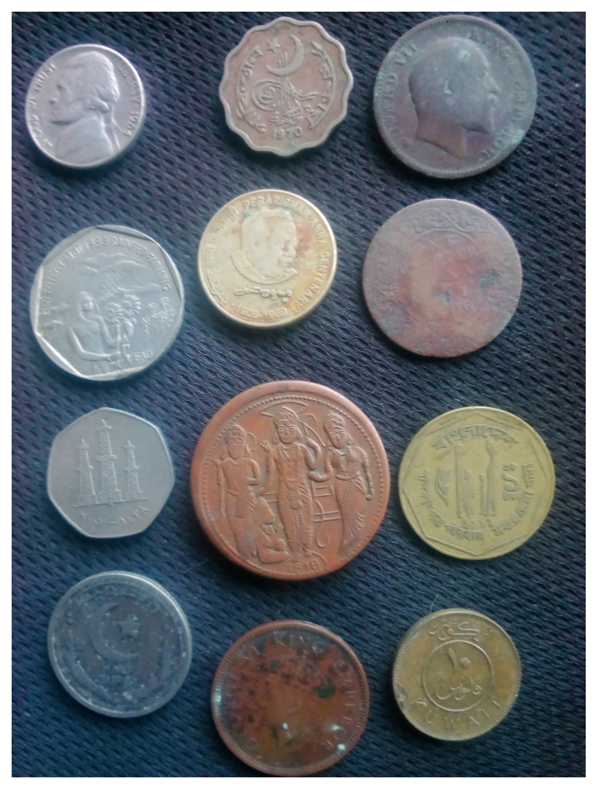
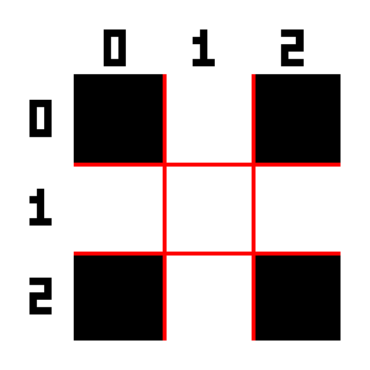

This chapter presents two fundamental topics in Digital Image Processing (DIP): mathematical morphology and image segmentation. Mathematical morphology provides a theoretical framework based on set theory for analyzing, refining, and quantifying the shape of objects in binary and grayscale images, through fundamental operators such as erosion and dilation. Segmentation, in turn, aims to partition the image into regions of interest, separating objects from the background and producing suitable representations for analysis and interpretation.
The chapter begins with thresholding, one of the most important segmentation techniques, introducing the automatic Otsu method and revisiting histogram analysis through interclass variance, as presented in Chapter 1. Next, the main mathematical morphology operators are studied, including erosion, dilation, opening, closing, and morphological reconstruction, which allow refining binary masks and preserving relevant object structures. Finally, region-based segmentation techniques are presented, such as connected component labeling, the distance transform, and the marker-controlled watershed algorithm, culminating in the extraction of geometric descriptors and the generation of bounding boxes compatible with modern object detection systems.
4.1 Objectives
By the end of this chapter, you will be able to:
Apply thresholding: Understand Otsu’s automatic criterion by maximizing inter-class variance (\(\sigma_B^2\)) and select appropriate preprocessing strategies to facilitate segmentation;
Master binary morphology: Understand and apply erosion (\(A\ominus B\)) and dilation (\(A\oplus B\)) as fundamental operators, deriving opening (\(A\circ B\)), closing (\(A\bullet B\)), and operations based on morphological reconstruction, such as mm::clohole and mm::edgeoff;
Apply grayscale morphology: Use morphological gradient and top-hat filters for enhancement and analysis of local structures;
Label connected components: Identify and separate connected regions in binary images through labeling algorithms;
Apply distance transform: Interpret and compute distances to the background using morphological approaches and geometric metrics;
Segment by regions: Build marker-based segmentation pipelines using Distance Transform and the watershed algorithm;
Extract geometric descriptors: Calculate properties such as area, perimeter, centroid, circularity, and bounding boxes through mm::label0 and contour extraction;
Relate DIP and computer vision: Understand how descriptors extracted by segmentation can be converted to formats used by modern detectors, such as YOLO.
import os, urllib.requestos.makedirs("tmp/state", exist_ok=True) # C++ track build artifacts (.cpp, binary, PNGs)url ="https://raw.githubusercontent.com/fzampirolli/pdi-vc/master/morph/config.py"ifnot os.path.exists("config.py"): urllib.request.urlretrieve(url, "config.py")# The kernel is Python even on the C++ track: `mm` (morph.py) is used by the# simulators, by the display of the figures the C++ binary generates, and by# the mm::Image state between cells. cpp=True also downloads the compiled track# (morph.hpp + stb_image*.h), used in the #include of the %%writefile *.cpp cells.import configconfig.setup(cpp=True)from morph import mmimport numpy as np
✅ Environment ready. Morph: 1.1.9 | OpenCV: 5.0.0
4.2 Thresholding
Thresholding is one of the simplest and most efficient forms of image segmentation. Its goal is to classify each pixel into two intensity classes, typically associated with object and background:
where \(f(x,y)\) represents the pixel intensity in the original image and \(g(x,y)\) is the resulting binary image.
The choice of the threshold \(T\) is important for the quality of the segmentation. The Otsu method automatically determines the optimal threshold by maximizing the between-class variance\(\sigma_B^2\), defined by:
\(w_0(T)\) and \(w_1(T)\) are the cumulative probabilities of the background and object classes;
\(\mu_0(T)\) and \(\mu_1(T)\) are the mean intensities of these classes;
\(\sigma_B^2(T)\) represents the between-class variance for a given threshold \(T\).
The method works best when the histogram presents two relatively separated groups of intensities. To that end, the algorithm evaluates all possible thresholds of the image — typically in the interval \([0,255]\) for 8-bit images — and selects the value that maximizes the between-class variance, denoted by \(\sigma_B^2\):
The Otsu method yields better results when the histogram presents two well-defined peaks (bimodality), corresponding to the background and the object. The greater the separation between these peaks and the more pronounced the maximum of \(\sigma_B^2\), the more reliable the obtained threshold tends to be.
In images with non-uniform illumination or multiple intensity regions, adaptive thresholding techniques — in which the threshold is computed locally — often produce more robust segmentations.
The subscript \(B\) in \(\sigma_B^2\) stands for between classes. Thus, \(\sigma_B^2\) represents the between-class variance.
4.2.1 Image of Coins
The image used to practice segmentation is a photograph of a collection of coins from different countries and eras (Figure 4.1). Credit: GAZI.MD.AHAD (CC BY-SA 4.0). It features circular objects with well-defined edges, making it ideal for demonstrating thresholding, morphological operators, distance transform, watershed, and shape descriptors.
%%writefile tmp/fig_04_coins.cpp#define MM_OUT "tmp/fig_04_coins.png"//| label: fig-04-coins//| fig-cap: "Imagem com moedas de vários tipos. Crédito: GAZI.MD.AHAD (CC BY-SA 4.0)."//| echo: true#include "morph.hpp"#include <filesystem>int main() { mm::Image img_coins_color = mm::read("https://upload.wikimedia.org/wikipedia/commons/2/25/GAZI.MD.AHAD_11.jpg"); mm::Image img_coins_gray = mm::gray(img_coins_color); mm::show(img_coins_color, MM_OUT);// [pdi:state-io] auto-generated — do not edit by handstd::filesystem::create_directories("tmp/state");mm::write(img_coins_color, "tmp/state/img_coins_color_7.png");// [pdi:state-io:end]return0;}
Overwriting tmp/fig_04_coins.cpp
!g++-I. -std=c++17 tmp/fig_04_coins.cpp -o tmp/fig_04_coins \&& ./tmp/fig_04_coins \&& test -f "tmp/fig_04_coins.png"\|| echo "⚠ mm::show não gravou tmp/fig_04_coins.png"
mm.show(mm.read("tmp/fig_04_coins.png"))

Figure 4.1: Imagem com moedas de vários tipos. Crédito: GAZI.MD.AHAD (CC BY-SA 4.0).
%%writefile tmp/mm_out_1.cpp#include "morph.hpp"#include <iostream>#include <filesystem>int main() {// [pdi:state-io] auto-generated — do not edit by handmm::Image img_coins_color = mm::_read_state("tmp/state/img_coins_color_7.png");// [pdi:state-io:end]//| echo: false// The header-only morphology in morph.hpp uses O(H·W·|SE|) loops; on a// full-size image, opening with a large disk + geodesic reconstruction// take minutes. In the C++ track we work on a reduced version (the py// stays full-res). mm::Image img_small = mm::resize(img_coins_color, 0.25); mm::Image img_coins_gray = mm::gray(img_small);// [pdi:state-io] auto-generated — do not edit by handstd::filesystem::create_directories("tmp/state");mm::write(img_coins_gray, "tmp/state/img_coins_gray_8.png");// [pdi:state-io:end]return0;}
Otsu’s method relies on a well bimodal histogram. The coin image has non-uniform illumination and dark coins close to the background, which hinders this. In the C++ track, global histogram equalization (mm::equalize) is applied before thresholding — the CLAHE × Gaussian comparison and the \(\sigma_B^2(T)\) curves are left for the Python track (Figure 4.2).
# Not yet ported to this language in this version — conceptual reference in Python.img_clahe = mm.clahe(img_coins_gray, 2.0, 8) # adaptive contrast limit enhancementimg_gauss = mm.gaussian(img_clahe, 5, 0)mm.show( [img_coins_gray, img_clahe, mm.histImg(img_clahe), mm.threshold(img_clahe)], titles=["Original", "CLAHE", "Histogram (CLAHE)", "Otsu"], cols=4)
Figure 4.2
4.2.3 Result: CLAHE as the Best Pre-processing
The analysis of Figure 4.2 indicates that CLAHE achieved the highest inter-class variance (\(\sigma_B^2 \approx 2{,}47 \times 10^3\)), with an optimal threshold \(T^* = 122\). Although the CLAHE+Gaussian combination produced a very similar result (\(\sigma_B^2 \approx 2{,}43 \times 10^3\), \(T^* = 123\)), the quantitative criterion of Otsu’s method slightly favors the use of CLAHE alone.
In visual terms, the binarized images obtained with CLAHE and CLAHE+Gaussian are practically equivalent. The difference between the two approaches becomes more evident in the analysis of the histograms and the values of \(\sigma_B^2(T)\) than in the direct inspection of the resulting segmentations. Thus, the choice of CLAHE is mainly based on maximizing the statistical separation between the background and object classes.
TipInterpretation of the results
Note that the CLAHE and CLAHE+Gaussian pre-processings produce very similar histograms and optimal thresholds (\(T^*=122\) and \(T^*=123\)). Consequently, the resulting binarized images are also quite similar. In this case, the decision is not based on striking visual differences but on the objective criterion of Otsu’s method: the highest value of \(\sigma_B^2\) indicates the best separation between the classes.
4.3 Mathematical Morphology
Mathematical morphology is a set-based theory used to analyze the shape and structure of objects in images. Unlike the linear filters presented in Chapter 3, morphological operators are nonlinear, as they are based on minimum, maximum, and spatial inclusion operations, rather than linear combinations of intensities. These operators act on the neighborhood of each pixel through a structuring element\(\mathbb{B}\), which defines the shape and size of the analyzed region.
In binary and grayscale images with flat elements, the structuring element translated to position \(x\) is defined spatially as:
\[
\mathbb{B}_x = \{ x + b \mid b \in \mathbb{B} \}
\]
At image border regions, part of the set \(\mathbb{B}_x\) may extend beyond the physical domain of the scene (\(\mathbb{E}\)). To ensure the mathematical consistency of the primitive operators at these boundaries, it is theoretically assumed that the space exterior to the image domain is filled with the neutral element of the corresponding operation (positive infinity for erosion and negative infinity for dilation), preventing the external environment from corrupting the internal structures of the object.
When the structuring element associates weights to its elements — that is, \(b: \mathbb{B} \to \mathbb{Z}\) — it is termed a structuring function or non-flat structuring element.
Developed by Matheron and Serra in the 1960s for binary images and subsequently extended to grayscale, mathematical morphology underpins operators such as morphological gradient, top-hat, watershed, and distance transform, all derived from two primitives: erosion and dilation [Matheron (1975); Serra (1982)].
4.3.1 Erosion and Dilation
The two primitive operators are defined in a unified manner for grayscale images (\(f: \mathbb{E} \to \mathbb{Z}\)) and, by restriction to the domain \(\{0,1\}\), also for binary images.
4.3.1.1 Erosion
The erosion of an image \(f\) by a structuring function \(b: \mathbb{B} \to \mathbb{Z}\) is formally defined by:
In practice, erosion replaces the intensity of pixel \(x\) with the minimum value resulting from the difference between the image and the structuring element in the neighborhood defined by the domain \(\mathbb{B}\). Positive values in the weights of \(b(z)\) force the local result downward, “digging” the image relief more deeply and intensifying the erosion.
In the flat case (where the weights are null within the domain, i.e., \(b \equiv 0\)), the expression simplifies to the pure local minimum:
In binary images, this operation is equivalent to requiring that the set \(\mathbb{B}\), translated to coordinate \(x\), be completely contained in the object \(A\):
\[
A \ominus \mathbb{B} = \{\, z \in \mathbb{E} \mid \mathbb{B}_z \subseteq A \,\}
\]
Visual Effect:Shrinks bright objects and structures, eliminating protrusions, bright peaks, or noise that are geometrically smaller than the domain \(\mathbb{B}\).
4.3.1.2 Implementation of erosion
The didactic version mm::ero0 implements the particular case of erosion with a flat structuring element. For each pixel \((y,x)\), the function traverses the spatial neighbors allowed by \(B\) and stores the smallest value found in the input image \(f\), directly reproducing the local minimum operation described in Equation 4.3 for \(b \equiv 0\).
Note that the neighbor values are always read statically from the original image \(f\); the output matrix \(g\) is used exclusively to record the accumulated minimum of the current neighborhood. Thus, the final result is invariant with respect to the pixel scanning order (whether by rows or columns).
The auxiliary function _viz computes the coordinates of valid neighbors within the physical boundaries of the image. At the borders, the initialization of the accumulator to 255 exactly emulates the padding with the neutral element required by the theory. The interface function mm::ero, in turn, resorts to the native and optimized OpenCV implementation (mm::ero) when the structuring element is flat, switching to the general routine mm::ero1 if the element has topographic weights.
The following computational example illustrates the application of a cross-shaped structuring element (mm::secross()) highlighted in Figure 4.3, comparing the execution of the didactic loop-based variant (mm::ero0) with the computational engine of OpenCV (mm::ero).
!g++-I. -std=c++17 tmp/fig_04_elemento_cruz.cpp -o tmp/fig_04_elemento_cruz \&& ./tmp/fig_04_elemento_cruz \&& test -f "tmp/fig_04_elemento_cruz.png"\|| echo "⚠ mm::show não gravou tmp/fig_04_elemento_cruz.png"
0 1 0
1 1 1
0 1 0
mm.show(mm.read("tmp/fig_04_elemento_cruz.png"))

Figure 4.3: Elemento estruturante em formato de cruz (\(B_{\text{cruz}}\)) utilizado para conectividade-4.
# The morph.hpp is header-only; below, the _viz helper and the body of mm::ero0().import re, pathlibhpp = pathlib.Path("morph.hpp").read_text()for nome, pat in [("_viz", r"template <class F>\ninline void _viz\(.*?\n\}"), ("ero0", r"inline Image ero0\(.*?\n\}")]: m = re.search(pat, hpp, re.S)print(f"// ---- mm::{nome} ----")print(m.group(0) if m elsef"({nome} não encontrada)")print()
// ---- mm::_viz ----
template <class F>
inline void _viz(const Image& f, const SE& B, int y, int x, F&& cb) {
double oh = -B.h / 2.0 + 0.5;
double ow = -B.w / 2.0 + 0.5;
for (int by = 0; by < B.h; ++by)
for (int bx = 0; bx < B.w; ++bx) {
int vy = (int)(y + by + oh);
int vx = (int)(x + bx + ow);
if (vy >= 0 && vy < f.h && vx >= 0 && vx < f.w)
cb(vy, vx, B.at(by, bx));
}
}
// ---- mm::ero0 ----
inline Image ero0(const Image& f, SE Bc = SE::box(3)) {
_require_gray(f, "ero0");
Image g(f.h, f.w, 1);
for (int y = 0; y < f.h; ++y)
for (int x = 0; x < f.w; ++x) {
int mn = 255;
_viz(f, Bc, y, x, [&](int vy, int vx, int bv) {
if (bv != 0 && (int)f.at(vy, vx) < mn) mn = f.at(vy, vx);
});
g.at(y, x) = (unsigned char)mn;
}
return g;
}
4.3.1.3 Dilation
Dilation of an image \(f\) by a structuring function \(b: \mathbb{B} \to \mathbb{Z}\) is formally defined by:
In practice, dilation replaces the intensity of pixel \(x\) with the largest value resulting from the sum between the image and the structuring element within the defined neighborhood. The spatial inversion argument (\(x - z\)) indicates that dilation implicitly evaluates the transposed (reflected) element \(\hat{b}\), a fundamental property for ensuring mathematical duality with respect to erosion.
In the flat case (where the weights are null within the domain, i.e., \(b \equiv 0\)), the expression reduces to pure local maximum:
For binary images, this operation is equivalent to requiring that the reflected set \(\hat{\mathbb{B}}\), translated to coordinate \(x\), has a non-empty intersection with object \(A\):
\[
A \oplus \mathbb{B} = \{\, z \in \mathbb{E} \mid \hat{\mathbb{B}}_z \cap A \neq \varnothing \,\}
\]
Visual Effect:Expands the bright structures of the image, increasing object filling, connecting nearby components, and eliminating channels, dark pits, or valleys that are geometrically smaller than the domain \(\mathbb{B}\).
4.3.1.4 Implementation of dilation
The didactic version mm::dil0 implements the particular case of dilation with a flat structuring element. For each pixel \((y,x)\), the function traverses the spatial neighbors allowed by \(B\) and stores the largest value found in the input image \(f\), directly reproducing the local maximum operation for \(b \equiv 0\).
Before starting the spatial scan, the structuring element undergoes a geometric reflection through the np.flip(Bc) instruction to explicitly construct the transposed matrix \(\hat{B}\) required by the theory. In perfectly symmetric masks (such as crosses, squares, and disks centered at the origin), this reflection does not alter the pixel arrangement; however, for asymmetric elements, this step is strictly necessary to ensure equivalence with the formal definitions and to safeguard the duality laws.
As verified in the erosion operator, neighbor values are always read statically from the original matrix \(f\), while the output matrix \(g\) acts purely as the register of the accumulated neighborhood maximum. At the image boundaries, initializing the accumulator to 0 exactly emulates the external padding with the neutral element (\(-\infty\), or zero in 8-bit representations), ensuring that the physical edges of the scene are dilated in perfect conformity with the standard adopted by OpenCV.
The computational example below illustrates the practical application of a cross-shaped element (mm::secross()), validating the consistency between the loop-based logic (mm::dil0) and the native industrial method (mm::dil).
# Body of mm::dil0() in morph.hpp (reflects the SE before scanning, like np.flip).import re, pathlibhpp = pathlib.Path("morph.hpp").read_text()m = re.search(r"inline Image dil0\(.*?\n\}", hpp, re.S)print(m.group(0) if m else"(dil0 não encontrada)")
inline Image dil0(const Image& f, SE Bc = SE::box(3)) {
_require_gray(f, "dil0");
SE B = Bc.reflected();
Image g(f.h, f.w, 1);
for (int y = 0; y < f.h; ++y)
for (int x = 0; x < f.w; ++x) {
int mx = 0;
_viz(f, B, y, x, [&](int vy, int vx, int bv) {
if (bv != 0 && (int)f.at(vy, vx) > mx) mx = f.at(vy, vx);
});
g.at(y, x) = (unsigned char)mx;
}
return g;
}
NoteNote: The Sign Confrontation (\(f(x+z)\) vs \(f(x-z)\))
Compare the formal definitions of erosion (Equation 4.3) and dilation (Equation 4.4). Consider an asymmetric structuring element to the right \(\mathbb{B}=\{0,1\}\) (origin and one pixel to the right) applied at position \(x=10\).
Due to the negative sign (\(-z\)), advancing in the structuring element corresponds to moving backward in the image, causing dilation to query the pixel to the left (\(9\)).
The _viz function, used in morph.py, generates neighbors by additive shifts of the form \(x+z\). For this reason, the implementation of mm::dil0 previously reflects the structuring element using np.flip(B). After reflection, the scan based on \(x+z\) accesses exactly the same points defined by the theoretical expression \(f(x-z)\) of dilation in Equation 4.4.
For symmetric structuring elements (such as discs, squares, and centered crosses), reflection does not alter the mask. For asymmetric elements, however, this step is essential for the implementation to correctly reproduce the mathematical definition of dilation and preserve the erosion–dilation duality.
NoteErosion–dilation duality
Erosion and dilation are dual by complement. This means that one operator can be fully obtained from the other, provided that one operates on the complement of the image using the reflected structuring element \(\hat{B}\):
\[
(A \ominus B)^c = A^c \oplus \hat{B} \quad \Longleftrightarrow \quad A \ominus B = (A^c \oplus \hat{B})^c
\]
Similarly, dilation can also be obtained from erosion:
\[
(A \oplus B)^c = A^c \ominus \hat{B} \quad \Longleftrightarrow \quad A \oplus B = (A^c \ominus \hat{B})^c
\]
In practical terms, the erosion of an object can be obtained by dilating its complement, followed by complementing the result (and vice versa). In the implementation of the morph.py package, the didactic versions mm::ero0 and mm::dil0 make this structure explicit through loops, while mm::ero and mm::dil delegate the operations to OpenCV for greater computational efficiency.
NoteBoundary conditions and finite images
In classical mathematical morphology, defined over an infinite domain (typically \(\mathbb{Z}^2\)), this duality is exact. In digital images, however, one works with finite matrices, and the result depends on how pixels located outside the image are treated.
For the duality identities to remain valid, the complement must be defined relative to the same universe, and the boundary conditions adopted for erosion and dilation must be complementary to each other. For example, if erosion assumes that external pixels belong to the object (\(255\)), then dilation applied to the complement must assume that these same external pixels belong to the background (\(0\)).
When different filling strategies are used (replication, reflection, constant value, etc.), the theoretical duality may no longer be satisfied exactly in regions near the image borders.
To numerically illustrate the morphological operators and the erosion–dilation duality, Figure 4.4 presents a 10×10 binary image processed with an “L”-shaped structuring element. In the implementation of morph.py, the origin of \(B\) is set at the geometric center of the mask — position \((1,1)\) for a 3×3 kernel — and must correspond to an active element for the erosion to behave correctly (as discussed earlier). The structuring element \(B_L\) defined below satisfies this condition. Figure 4.5 complements the analysis with an interactive erosion simulator, allowing visualization of the displacement of the structuring element over the image and identification of the positions where it remains completely contained within the object.
Figure 4.4: Erosão e dilatação em imagem binária 10×10 com elemento estruturante ‘L’ assimétrico 3×3. Validação da dualidade erosão–dilatação.
🪨 Simulator: Morphological ErosionA ⊖ B_L · offsets via _viz
Click on a canvas cell to move the kernel B_L or use the sliders to test containment of contents.
X Position (col)
4
Y Position (row)
4
Pixel Erosion
255
🖱️ Click a cell to move the kernel B_L
🟢
Success: contained!
Pixel receives 1 (255) in the eroded image.
Coordinate Controls
4
4
Kernel B_L (3×3)
1
0
0
1
★
0
1
1
0
Figure 4.5: Simulator: Morphological Erosion (A ⊖ B_L)
4.3.2 Opening and Closing
Combining erosion and dilation yields two operators of great practical utility: opening and closing, defined by Equations Equation 4.5 and Equation 4.6. Their main effects are summarized in Table 4.1.
Opening (opening) — erosion followed by dilation using the same \(B\):
\[
A \circ B = (A \ominus B) \oplus B
\tag{4.5}\]
Closing (closing) — dilation followed by erosion using the same \(B\):
\[
A \bullet B = (A \oplus B) \ominus B
\tag{4.6}\]
In practice, mm::open and mm::close apply the same structuring element in both stages. For symmetric structuring elements (the most common ones), this implementation coincides with the mathematical definition presented above.
Table 4.1: Properties of opening and closing.
Operator
Sequence
Main effect
Opening \(A \circ B\)
erosion → dilation
Removes structures unable to contain the structuring element; smooths external contours
Closing \(A \bullet B\)
dilation → erosion
Fills holes smaller than \(B\); smooths internal contours
Important property: both are idempotent. For example,
\[
(A \circ B) \circ B = A \circ B,
\]
that is, after the first application, further applications of the same operator no longer alter the result.
4.3.2.1 Implementation of opening and closing
Unlike erosion and dilation, opening and closing do not introduce new computational mechanisms. Both are obtained by the sequential composition of the primitive operators already presented:
The mm::open function delegates the operation to mm::open(f, B), while mm::close uses mm::close(f, B), producing the same result more efficiently.
Opening inherits from erosion the ability to remove structures smaller than the structuring element and from dilation the partial restoration of preserved regions. Closing performs the reverse process: it first expands the objects and then restores their original dimensions, filling gaps and holes smaller than the structuring element.
4.3.2.2 Alternating Sequential Filter
In practice, opening and closing are often applied in sequence to simultaneously remove external noise and fill internal holes. The mm::asf (Alternating Sequential Filter) function generalizes this strategy by applying openings and closings alternately with progressively larger structuring elements. The available sequences are presented in Table 4.2.
Table 4.2: Sequences of the alternating sequential filter mm::asf.
Sequence
Order
Typical use
'OC'
opening → closing
removes external noise before filling small holes
'CO'
closing → opening
fills small holes before removing external noise
'OCO'
opening → closing → opening
emphasizes the removal of external noise
'COC'
closing → opening → closing
emphasizes the filling of holes and gaps
The parameter n controls the number of scales used by the filter. In each iteration \(i\), the structuring element is enlarged by Minkowski addition (mm::sesum(b, i)), producing a sequence of increasingly comprehensive morphological filters. Unlike a single opening or closing with a large structuring element, the ASF performs progressive smoothing across multiple scales, better preserving the geometry of relevant objects while eliminating smaller structures. Figure 4.6 presents an example of applying opening, closing, and ASF to the coins image.
# Not yet ported to this language in this version — conceptual reference in Python.# | fig-cap: "Opening, closing, composition, and alternating sequential filter applied to Otsu binarization of the coins (preprocessed by contrast enhancement). Structuring element: 13×13 disk."#| echo: true#| output: trueimg_bin = mm.threshold(img_clahe)B_disk = mm.sedisk(19)img_open = mm.open(img_bin, B_disk) # erosion → dilationimg_close = mm.close(img_bin, B_disk) # dilation → erosionimg_oc = mm.close(img_open, B_disk) # opening followed by closingimg_asf = mm.asf(img_bin, 'OC', mm.sedisk(3), n=7) # ASF: base disk 3×3, grows each iterationmm.show( [img_bin, img_open, img_close, img_oc, img_asf], titles=["Otsu binarization", "Opening (A∘B)", "Closing (A∙B)","Opening→Closing", "ASF-OC (n=7)"], cols=5, figsize=(15, 12))
Figure 4.6
4.3.3 Geodesic Operators
Geodesic operators introduce an additional constraint to classical morphological operators through a control image called the mask\(g\). Instead of allowing erosion or dilation to propagate freely across the image, the result of each iteration is limited pointwise by the mask values, restricting the operation’s evolution to permitted regions.
4.3.3.1 Geodesic Dilation
The geodesic dilation of a marker image \(f\) under a mask image \(g\), using a flat structuring element \(b\), is defined by:
\[
f \oplus_g b = (f \oplus b) \wedge g,
\tag{4.7}\]
where \(\wedge\) represents the pointwise minimum.
In other words, a conventional dilation is initially performed on the marker, and then the result is constrained by the mask \(g\). In this way, the propagation can never exceed the regions permitted by the mask.
The classical formulation of geodesic dilation assumes that the marker is contained within the mask, that is, \(f \le g\), ensuring that the evolution of the operation always remains bounded by the mask.
4.3.3.2 Implementation of geodesic dilation
The mm::cdil function directly implements this operator and allows executing multiple consecutive iterations:
def cdil(f, g, b=np.zeros((3,3),dtype='uint8'), n=1):"""Dilatação geodésica do marcador f sob a máscara g.""" y = f.copy()for _ inrange(n): y = np.minimum(mm.dil(y, b), g)return y
The np.minimum(mm::dil(y, b), g) instruction exactly implements the mathematical definition of geodesic dilation, that is, \((y \oplus b)\wedge g\).
When \(n=1\), the function performs a single geodesic dilation. For \(n>1\), the result of each step becomes the marker for the next step, producing a progressive propagation controlled by the mask.
The interactive simulator Figure 4.7 allows you to follow, step by step, the propagation of the marker \(f\) along the corridors of the maze. At each iteration of mm::cdil, the dilation front advances to the neighboring free cells — those where \(g = 1\) — while the walls (\(g = 0\)) remain impassable. The number of steps required for the marker to reach the exit corresponds exactly to the geodesic length of the shortest path within the mask, highlighting the direct connection between iterated geodesic dilation and the notion of distance in graphs.
🗺️ Simulator: Geodesic Dilation in the Mazeδ_g^(n)(f)
Wall
Free path (g)
Marker f
Propagation
Exit
Step 0 — initial marker f (entry)
Figure 4.7: Interactive simulator of geodesic dilation: the marker f (green) propagates step by step through the free paths of mask g, without crossing walls.
4.3.3.3 Geodesic Erosion
Dually, the geodesic erosion of a marker image \(f\) under a mask image \(g\) is defined by:
\[
f \ominus_g b = (f \ominus b) \vee g,
\tag{4.8}\]
where \(\vee\) represents the pointwise maximum operator.
In this case, the conventional erosion of the marker is followed by a lower constraint imposed by the mask. Thus, no pixel of the result can assume a value lower than the corresponding pixel of the mask.
The classical formulation of geodesic erosion presupposes the dual condition
\[
f \ge g,
\]
so that the mask acts as a lower bound throughout the entire process.
4.3.3.4 Implementation of geodesic erosion
The static function mm::cero implements this operator:
staticmethoddef cero(f, g, b=np.zeros((3,3),dtype='uint8'), n=1):"""Erosão geodésica do marcador f sob a máscara g.""" y = f.copy()for _ inrange(n): y = np.maximum(mm.ero(y, b), g)return y
The instruction np.maximum(mm::ero(y, b), g) directly implements the expression \((y \ominus b)\vee g\).
As with geodesic dilation, the parameter \(n\) defines how many successive geodesic erosions will be computed before returning the final image.
NoteRelation to morphological reconstruction
The morphological reconstruction presented in the next section is obtained by iteratively applying geodesic dilation (mm::cdil) until a fixed point is reached, that is, until no cell changes value between two consecutive iterations. In other words, reconstruction consists of a sequence of successive geodesic dilations that propagate within the mask until no further changes occur.
Dually, it is also possible to define reconstructions based on geodesic erosion through successive applications of mm::cero.
4.3.3.5 Example: propagation in a maze via duality
Figure 4.8 illustrates the resolution of the connectivity problem in a maze using morphological duality through the functions mm::cero and mm::suprec.
Instead of propagating a marker through the free corridors using geodesic dilations, the problem is formulated in the complementary domain. Initially, the original mask is inverted,
\[
g = 1 - g_{orig},
\]
so that the walls now assume value 1 and the corridors value 0. Similarly, the marker is constructed in this same complementary domain, containing a single value 0 at the maze entrance position and value 1 in all other pixels.
Using the cross-shaped structuring element (mm::secross()), the geodesic erosion acts on the complemented marker. At each iteration of mm::cero, the region connected to the initial marker undergoes successive erosions, while the mask imposes a lower limit that prevents propagation through the maze walls.
The intermediate images show evolution states after different numbers of iterations (n=5, n=12, and n=22). The final result is obtained by the geodesic reconstruction by erosion (mm::suprec), which applies successive geodesic erosions until reaching a fixed point, that is, a situation in which no further change occurs between two consecutive iterations.
In the complementary domain, the reconstructed region corresponds exactly to the set of corridors connected to the maze entrance. Thus, connectivity between entrance and exit can be determined directly from the reconstructed image.
Figure 4.8: Resolução de labirinto no domínio complementar: com máscara e marcador invertidos, mm::cero e mm::suprec propagam a onda geodésica pelos corredores.
4.3.4 Morphological Reconstruction
Morphological reconstruction propagates a marker image \(f\) within a mask image \(g\), ensuring that the result never exceeds the intensity values imposed by the mask. The fundamental operator that enables this contained propagation is the geodesic dilation, defined by Equation 4.7.
Reconstruction is obtained by the iterative application of this conditioned dilation. Initially, the marker is bounded by the mask to establish the initial state:
\[
X^{(0)} = f \wedge g,
\]
and the subsequent iterations are defined recursively by:
\[
X^{(k)} = (X^{(k-1)} \oplus b) \wedge g.
\]
The sequence grows monotonically until it reaches a fixed point, producing the morphological reconstruction by dilation (also known in the literature as inf-reconstruction):
The iterative ascent is halted as soon as stability is achieved, that is, when two consecutive iterations produce matrices with absolutely identical values.
4.3.4.1 Implementation of morphological reconstruction
The didactic routine mm::infrec directly implements the iterative fixed-point algorithm. Initially, the initial effective marker \(X^{(0)}\) is determined by the operation np.minimum(f, g). To ensure that the verification loop executes the first pass without triggering false premature convergences, the control variable of the previous iteration (y1) is initialized filled with a sentinel value outside the data domain (or simply with a matrix that forces the first execution).
def infrec(f, g, b=np.zeros((3,3), dtype='uint8')):"""Inf-reconstruction: dilates the marker (f ∧ g) until convergence under the mask g.""" y = np.minimum(f, g)# Initialize y1 with impossible values to force entry into the loop y1 = np.full_like(f, 256, dtype=np.int16) whilenot np.array_equal(y, y1): y1 = y.copy()# Apply geodesic dilation: (y ⊕ b) ∧ g y = np.minimum(mm.dil(y, b), g)return y.astype('uint8')
Inside the while loop, the variable y stores the current estimate of the reconstruction \(X^{(k)}\), while y1 preserves the image from the immediately preceding stage \(X^{(k-1)}\). The conditional control statement np.minimum(mm::dil(y, b), g) faithfully translates the theoretical geodesic dilation, where the conventional morphological expansion commanded by OpenCV is immediately “pruned” and limited by the intensity barriers of the mask \(g\). The loop ceases when no pixel modification is recorded between steps.
4.3.4.2 Advantages of Morphological Reconstruction
Morphological reconstruction is significantly more robust than conventional opening because it can remove unwanted structures without distorting or altering the morphology of the objects that should be preserved.
While classical opening smooths corners, eliminates tips, and deforms contours due to the rigid geometric imposition of the structuring element, geodesic reconstruction uses the mask to accurately recover the original boundaries and shapes of objects that have connectivity with the original marker.
In intuitive terms, the marker acts as a contagion seed that expands progressively, but only travels through the regions allowed by the mask. Components that have no intersection with the marker will never be reconstructed (being eliminated), while components touched by the seed expand until fully restoring their original geometry.
This discriminatory and conservative behavior is illustrated in Figure 4.9, using the cross-shaped structuring element presented in Figure 4.3.
%%writefile tmp/fig_04_reconstrucao_didatica.cpp#define MM_OUT "tmp/fig_04_reconstrucao_didatica.png"// Compile with: g++-std=c++17-o program program.cpp -I. -lstdc++-lm#include "morph.hpp"#include <iostream>#include <vector>#include <string>//| label: fig-04-reconstrucao-didatica//| fig-cap: "*Pipeline* de Reconstrução Morfológica por Dilatação Condicionada: a máscara contém dois objetos, o marcador isola apenas o núcleo do objeto principal, e as iterações reconstroem sua forma exata até a convergência."//| echo: true//| output: trueint main() { mm::Image g(10, 10); unsigned char g_data[10][10] = { {0,0,0,0,0,0,0,0,0,0}, {0,1,1,1,0,0,0,1,1,0}, {0,1,1,1,1,0,0,1,1,0}, {0,1,1,1,1,0,0,0,0,0}, {0,1,1,1,1,0,0,0,0,0}, {0,1,1,1,0,0,0,0,0,0}, {0,0,1,1,1,0,0,1,0,0}, {0,0,1,1,1,0,0,1,1,0}, {0,0,0,1,0,0,0,0,0,0}, {0,0,0,0,0,0,0,0,0,0}};for (int y =0; y <10; y++)for (int x =0; x <10; x++) g.at(y, x) = g_data[y][x] *255; mm::Image B_cruz = mm::secross(); mm::Image f = mm::ero(g, mm::sebox());// marcador: núcleo do objeto principal std::vector<mm::Image> iteracoes; std::vector<std::string> titulos; mm::Image img_atual = f;for (int i =1; i <=5; i++) { img_atual = mm::cdil(img_atual, g, B_cruz); iteracoes.push_back(img_atual); titulos.push_back("Dilatação Cond. (n="+ std::to_string(i) +")"); } mm::Image img_reconstruida = mm::infrec(f, g, B_cruz);// Check if reconstruction equals last iterationbool equal = true;for (int i =0; i < img_reconstruida.h * img_reconstruida.w * img_reconstruida.channels; i++) {if (img_reconstruida.data[i] != iteracoes.back().data[i]) { equal = false;break; } } std::cout <<"✅ Estabilidade na iteração 5: "<< (equal ? "True" : "False") << std::endl; std::vector<mm::Image> imgs; imgs.push_back(g); imgs.push_back(f); imgs.insert(imgs.end(), iteracoes.begin(), iteracoes.end()); imgs.push_back(img_reconstruida); std::vector<std::string> titles; titles.push_back("Máscara (g)"); titles.push_back("Marcador (f)"); titles.insert(titles.end(), titulos.begin(), titulos.end()); titles.push_back("Reconstrução R_g(f)"); mm::show(imgs, MM_OUT, titles, 8);return0;}
Overwriting tmp/fig_04_reconstrucao_didatica.cpp
!g++-I. -std=c++17 tmp/fig_04_reconstrucao_didatica.cpp -o tmp/fig_04_reconstrucao_didatica \&& ./tmp/fig_04_reconstrucao_didatica \&& test -f "tmp/fig_04_reconstrucao_didatica.png"\|| echo "⚠ mm::show não gravou tmp/fig_04_reconstrucao_didatica.png"
Figure 4.9: Pipeline de Reconstrução Morfológica por Dilatação Condicionada: a máscara contém dois objetos, o marcador isola apenas o núcleo do objeto principal, e as iterações reconstroem sua forma exata até a convergência.
4.3.5 Hole Filling and Border Removal
Two operators based on morphological reconstruction complete the binary cleaning pipeline. Their main characteristics are summarized in Table 4.3.
Hole filling (mm::clohole) removes cavities completely surrounded by the object, regardless of size, without altering the external contours. The procedure operates on the complement of the image, using as a marker a restriction of the frame to the background:
In operational terms, the external background is first reconstructed, and then complementation is applied to recover the objects with filled holes.
Border object removal (mm::edgeoff) eliminates all objects that touch the image border, preserving only fully internal components. The marker is obtained by the intersection between the frame and the objects of the image:
\[
\text{edgeoff}(f) = f \setminus R_f^\delta(\text{frame}(f) \wedge f)
\tag{4.11}\]
Table 4.3: Comparison between the clohole and edgeoff operators.
Operator
Marker
Mask
Effect
mm::clohole
frame restricted to the background (\(f^c\))
\(f^c\)
Fills internal holes
mm::edgeoff
frame restricted to the object (\(f\))
\(f\)
Removes objects connected to the border
The step-by-step evolution of these geodesic transformations can be followed in the figures below. Figure 4.10 illustrates the controlled flooding mechanism of the mm::clohole operator, in which reconstruction occurs from the external background and prevents propagation into internal regions not connected to the exterior, resulting in consistent filling of internal cavities. In contrast, Figure 4.11 details the dynamics of the mm::edgeoff operator, in which only components connected to the border are reconstructed and subsequently removed, preserving exclusively the objects fully contained within the interior of the image.
The connectivity of the geodesic propagation is controlled by the structuring element: mm::sebox() (8-neighborhood) includes diagonal connections, whereas mm::secross() (4-neighborhood) excludes them. Consequently, the choice of the structuring element affects which components are reached by the reconstruction and, therefore, which will be preserved or removed.
4.3.5.1 Compliance with the implementation
The definitions above are directly aligned with the implementation in morph.py, reproduced below:
staticmethoddef clohole(f, b=np.ones((3,3),dtype='uint8')):# marcador restrito ao fundo da imagem marcador = mm.frame(f, border=1) & mm.neg(f)return mm.neg(mm.infrec(marcador, mm.neg(f), b))staticmethoddef edgeoff(f, b=np.ones((3,3),dtype='uint8')):# marcador restrito aos objetos da imagem marcador = mm.frame(f, border=1) & freturn mm.subm(f, mm.infrec(marcador, f, b))
These implementations make it explicit that both operators are direct instances of morphological reconstruction by geodesic dilation using mm::infrec, differing only in the choice of marker and mask: clohole operates on the image complement, while edgeoff operates directly in the domain of objects.
Figure 4.10: Pipeline de preenchimento de buracos (clohole): o marcador vem da borda da imagem, restrito ao complemento \(f^c\). A dilatação geodésica reconstrói o fundo externo; após a complementação, os buracos internos ficam preenchidos.
%%writefile tmp/fig_04_edgeoff_didatico.cpp#define MM_OUT "tmp/fig_04_edgeoff_didatico.png"// Compile with: g++-std=c++17-I. -o program program.cpp -lm#include "morph.hpp"#include <iostream>#include <vector>#include <string>int main() {//| label: fig-04-edgeoff-didatico//| fig-cap: "*Pipeline* of edge structure elimination (*edgeoff*): the marker captures the roots connected to the extremities, the reconstruction delimits these elements and the subtraction preserves only the totally internal objects."//| echo: true//| output: true mm::Image f(10, 10);// Initialize f with the given pattern *255 unsigned char pattern[10][10] = { {0,0,0,0,0,0,0,0,0,0}, {0,1,1,1,1,0,0,0,0,1}, {0,1,0,0,1,0,0,1,0,1}, {0,1,0,0,1,0,0,1,0,1}, {0,1,1,1,1,0,0,1,0,0}, {0,0,0,0,0,0,0,0,0,0}, {0,0,1,1,1,0,1,1,1,0}, {0,0,1,1,1,0,1,0,1,0}, {0,0,1,1,1,0,1,1,1,0}, {0,0,0,0,0,0,0,0,0,1} };for (int y =0; y <10; y++)for (int x =0; x <10; x++) f.at(y, x) = pattern[y][x] *255; mm::Image B_box = mm::sebox(); mm::Image marcador_eo = mm::band(mm::frame(f, 1), f);// borda ∩ f std::vector<mm::Image> iteracoes; std::vector<std::string> titulos; mm::Image img_atual = marcador_eo;for (int i =1; i <6; i++) { img_atual = mm::cdil(img_atual, f, B_box); iteracoes.push_back(img_atual); titulos.push_back("Iter. (n="+ std::to_string(i) +")"); } mm::Image img_edgeoff = mm::edgeoff(f, B_box); std::vector<mm::Image> show_imgs = {f, marcador_eo}; show_imgs.insert(show_imgs.end(), iteracoes.begin(), iteracoes.end()); show_imgs.push_back(img_edgeoff); std::vector<std::string> show_titles = {"f original", "Marcador (borda)"}; show_titles.insert(show_titles.end(), titulos.begin(), titulos.end()); show_titles.push_back("edgeoff(f)"); mm::show(show_imgs, MM_OUT, show_titles, 8);return0;}
Overwriting tmp/fig_04_edgeoff_didatico.cpp
!g++-I. -std=c++17 tmp/fig_04_edgeoff_didatico.cpp -o tmp/fig_04_edgeoff_didatico \&& ./tmp/fig_04_edgeoff_didatico \&& test -f "tmp/fig_04_edgeoff_didatico.png"\|| echo "⚠ mm::show não gravou tmp/fig_04_edgeoff_didatico.png"
Figure 4.11: Pipeline de eliminação de estruturas de borda (edgeoff): o marcador captura as raízes conectadas às extremidades, a reconstrução delimita esses elementos e a subtração preserva só os objetos totalmente internos.
4.3.6 Binary Cleaning Pipeline with CLAHE
Based on the previous analysis — in which CLAHE produced the highest inter-class variance value (\(\sigma_B^2 \approx 2.47 \times 10^3\)), see Figure 4.2, and the mm::clohole operator proved effective in filling internal cavities —, the final segmentation pipeline, illustrated in Figure 4.12, is structured by the following computational flow:
After the mm::clohole step, a second morphological opening is applied with a larger structuring element (mm::sedisk(33), a disk of diameter 33). This operation removes small residual regions and artifacts that may have remained after segmentation. In particular, geodesic filling can transform small isolated cavities into components connected to the object, making an additional size-based filtering step convenient. The diameter was chosen so that the coins remain able to contain the structuring element, while significantly smaller components are eliminated.
In this image, no coin is connected to the matrix border. Consequently, applying mm::edgeoff does not alter the result obtained after the second opening. Nevertheless, this step is kept in the pipeline for robustness, since in other images there may be partially visible objects or objects connected to the borders, which should be removed before the analysis stage.
TipWhy the opening after clohole?
The mm::clohole operator fills all closed cavities present in the segmented objects. In some situations, small unwanted regions may remain after this step or become connected to the main objects. The subsequent morphological opening removes components smaller than the structuring element, while preserving the coins due to their significantly larger size.
%%writefile tmp/fig_04_pipeline_clahe.cpp#define MM_OUT "tmp/fig_04_pipeline_clahe.png"// C++ translation of Python morphology pipeline#include "morph.hpp"#include <iostream>#include <vector>#include <string>#include <filesystem>int main() {// [pdi:state-io] auto-generated — do not edit by handmm::Image img_coins_gray = mm::_read_state("tmp/state/img_coins_gray_8.png");// [pdi:state-io:end]// Variables img_coins_gray is provided asinput mm::Image img_prep = mm::equalize(img_coins_gray); mm::Image img_bin = mm::threshold(img_prep); mm::Image img_open = mm::open(img_bin, mm::sedisk(5)); mm::Image img_hole = mm::clohole(img_open); mm::Image img_limpo = mm::open(img_hole, mm::sedisk(11)); mm::Image img_final = mm::edgeoff(img_limpo, mm::sebox(), 1); mm::show( std::vector<mm::Image>{img_prep, img_bin, img_open, img_hole, img_limpo, img_final}, MM_OUT, std::vector<std::string>{"Realçado", "Otsu", "Abertura (r=9)", "clohole", "Abertura (r=33)", "Final (edgeoff)"},6 );// [pdi:state-io] auto-generated — do not edit by handstd::filesystem::create_directories("tmp/state");mm::write(img_final, "tmp/state/img_final_56.png");// [pdi:state-io:end]// [pdi:panel-io] auto-generated — do not edit by handstd::filesystem::create_directories("tmp");mm::write(img_prep, "tmp/fig_04_pipeline_clahe_0.png");mm::write(img_bin, "tmp/fig_04_pipeline_clahe_1.png");mm::write(img_open, "tmp/fig_04_pipeline_clahe_2.png");mm::write(img_hole, "tmp/fig_04_pipeline_clahe_3.png");mm::write(img_limpo, "tmp/fig_04_pipeline_clahe_4.png");mm::write(img_final, "tmp/fig_04_pipeline_clahe_5.png");// [pdi:panel-io:end]return0;}
Overwriting tmp/fig_04_pipeline_clahe.cpp
!g++-I. -std=c++17 tmp/fig_04_pipeline_clahe.cpp -o tmp/fig_04_pipeline_clahe \&& ./tmp/fig_04_pipeline_clahe \&& test -f "tmp/fig_04_pipeline_clahe.png"\|| echo "⚠ mm::show não gravou tmp/fig_04_pipeline_clahe.png"
Figure 4.12: Pipeline de segmentação: realce de contraste → Otsu → abertura (r=9) → clohole → abertura (r=33) → edgeoff. (A trilha Python usa CLAHE no realce; aqui, equalização global.)
4.3.7 Grayscale Morphology
Morphological operators extend naturally to grayscale images. In this formulation, erosion and dilation act directly on the image intensity levels. For flat structuring elements (\(b \equiv 0\)), erosion corresponds to the local minimum and dilation to the local maximum within the neighborhood defined by the structuring element.
The intuitive interpretation is straightforward: erosion darkens regions by replacing each pixel with the smallest value in its neighborhood, while dilation lightens regions by using the largest available value. Combining these operators allows for the construction of transformations capable of enhancing edges, removing illumination trends, and highlighting local structures.
Three derived operators are especially useful:
Morphological gradient — highlights edges as the difference between dilation and erosion:
\[
\text{grad}_B(f) = (f \oplus B) - (f \ominus B)
\tag{4.12}\]
Top-hat — highlights bright structures smaller than the structuring element (difference between the original image and its opening):
\[
\text{top-hat}_B(f) = f - (f \circ B)
\tag{4.13}\]
Black-hat — highlights dark structures smaller than the structuring element (difference between the closing and the original image):
\[
\text{black-hat}_B(f) = (f \bullet B) - f
\tag{4.14}\]
The Top-hat extracts bright details that do not survive the opening, while the Black-hat reveals dark details removed by the closing. The morphological gradient, in turn, enhances abrupt intensity transitions, producing a representation similar to that of an edge detector.
To understand the mechanism of these operators at a local level, Figure 4.13 presents an interactive simulator of grayscale morphology. The simulator allows you to freely edit the structuring element, visualize its displacement over the image, and simultaneously track the one-dimensional intensity profile. In this way, it becomes possible to directly observe how erosion selects local minima, how dilation selects local maxima, and how the morphological gradient emerges from the difference between these two operators.
The button located in the upper right corner allows you to toggle between the original grayscale visualization and a pseudocolored representation (colormap) for the three gradient types only. The colored version facilitates the visual perception of intensity variations, making the action of the morphological operators on maxima, minima, and local transitions of the image more evident.
The operators presented are available in morph.py through the functions mm::gradm, mm::tophat, and mm::blackhat.
🎛️ Advanced Mathematical Morphology Simulator
🖱️ Move the mouse to update the 1D profile of the corresponding line
X (col)
—
Y (row)
—
f(x,y)
—
value
—
Element B (Click to Edit)
Opening (f∘B): dil(ero(f)) Closing (f•B): ero(dil(f)) Gradient: dil(f) − ero(f) Top-hat: f − (f∘B) Black-hat: (f•B) − f
1D line profile: None (hover over the image)
Figure 4.13: Advanced interactive morphology simulator with editable structuring element and 1D profile.
Figure 4.14 illustrates the effects of these operators on the coin image and their respective histograms. Note that erosion shifts the distribution toward lower intensities, while dilation shifts it toward higher intensities. The gradient concentrates values in contour regions, and the Top-hat and Black-hat operators produce histograms strongly concentrated at low intensity levels, as only small local structures are highlighted.
%%writefile tmp/fig_04_morf_gc_histogramas.cpp#define MM_OUT "tmp/fig_04_morf_gc_histogramas.png"//#| label: fig-04-morf-gc-histogramas//#| fig-cap: "Morfologia em tons de cinza e seus histogramas: erosão, dilatação, gradiente, top-hat e black-hat. Elemento estruturante: disco de diâmetro 19."//#| echo: true//#| output: true#include "morph.hpp"#include <iostream>#include <vector>#include <string>int main() {// [pdi:state-io] auto-generated — do not edit by handmm::Image img_coins_gray = mm::_read_state("tmp/state/img_coins_gray_8.png");// [pdi:state-io:end] mm::Image B = mm::sedisk(9); mm::Image img_ero = mm::ero(img_coins_gray, B); mm::Image img_dil = mm::dil(img_coins_gray, B); mm::Image img_grad = mm::gradm(img_coins_gray, B); mm::Image img_th = mm::tophat(img_coins_gray, B); mm::Image img_bh = mm::blackhat(img_coins_gray, B); mm::show( {img_coins_gray, mm::histImg(img_coins_gray), img_ero, mm::histImg(img_ero), img_dil, mm::histImg(img_dil), img_grad, mm::histImg(img_grad), img_th, mm::histImg(img_th), img_bh, mm::histImg(img_bh)}, MM_OUT, {"Original", "Hist", "Erosão", "Hist", "Dilatação", "Hist","Gradiente", "Hist", "Top-hat", "Hist", "Black-hat", "Hist"},4 );return0;}
Overwriting tmp/fig_04_morf_gc_histogramas.cpp
!g++-I. -std=c++17 tmp/fig_04_morf_gc_histogramas.cpp -o tmp/fig_04_morf_gc_histogramas \&& ./tmp/fig_04_morf_gc_histogramas \&& test -f "tmp/fig_04_morf_gc_histogramas.png"\|| echo "⚠ mm::show não gravou tmp/fig_04_morf_gc_histogramas.png"
Figure 4.14: Morfologia em tons de cinza e seus histogramas: erosão, dilatação, gradiente, top-hat e black-hat. Elemento estruturante: disco de diâmetro 19.
The morphological operators presented previously will now be used as tools for refinement and marker generation in more advanced segmentation methods, presented below.
4.4 Image Segmentation: Fundamentals and Taxonomy
Image segmentation consists of dividing the image into regions associated with objects or structures of interest. In DIP, it represents the transition between low-level processing — such as filtering and enhancement — and more advanced analysis stages, such as feature extraction, recognition, and scene interpretation.
Formally, the goal of segmentation is to decompose the complete spatial domain of an image, denoted by \(\Omega\), into a partition of subsets \(\{R_1, R_2, \ldots, R_n\}\) that simultaneously satisfies the criteria of completeness and disjointness:
In addition to the completeness and disjointness properties expressed in Equation 4.15, each subregion \(R_i\) must constitute a homogeneous domain according to a similarity predicate defined over local properties — intensity, color, or texture — and, simultaneously, be distinct from adjacent regions.
Segmentation techniques can be organized into different families. This chapter emphasizes the approaches summarized in Table 4.4, based primarily on criteria of intensity, connectivity, and spatial proximity.
Table 4.4: Simplified taxonomy of the main segmentation and refinement approaches studied in this chapter.
Approach
Segmentation Criterion
Reference Operators
Thresholding
Partitioning of the intensity space
Otsu’s criterion, global and local thresholding
Mathematical Morphology
Spatial relations defined by structuring elements/functions
Erosion, dilation, opening, closing, and reconstruction
Region-Based
Local homogeneity and spatial connectivity
Connected component labeling, Distance Transform, and Watershed
Up to this point, the practical development has focused on thresholding, through the combination of adaptive CLAHE equalization and Otsu’s global method. This step was complemented by morphological reconstruction operators based on geodesic dilations, implemented by the functions mm::infrec, mm::clohole, and mm::edgeoff, producing a clean binary mask suitable for analysis.
However, in scenarios where distinct objects appear connected in the binary mask — whether by physical contact, partial overlap, or narrow pixel bridges produced by segmentation — thresholding is no longer sufficient to individualize each object. In such cases, multiple objects become part of a single connected component, hindering subsequent measurement and interpretation stages.
To overcome this limitation, the following sections introduce three complementary tools: Connected Component Labeling, the Distance Transform, and the marker-based Watershed segmentation algorithm. Together, these techniques make it possible to separate adjacent objects, identify regions individually, and extract consistent geometric descriptors for quantitative analysis.
4.4.1 Labeling
Connected component labeling is the operator that assigns a unique integer identifier to each set of pixels belonging to the same connected component in a binary image.
NoteFormal Definition
Given a binary image \(f\) and a connectivity relation defined by a structuring element \(B\) (typically 4-connectivity or 8-connectivity), the labeling algorithm of Figure 4.15 produces an image \(g\) in which all pixels belonging to the same connected component receive the same positive integer label, while pixels belonging to distinct components receive different labels.
Connectivity defines which pixels are considered direct neighbors of a pixel \((x,y)\). The most commonly used definitions are:
4-Connectivity: considers only the four orthogonal neighbors (north, south, east, and west).
8-Connectivity: considers the four orthogonal neighbors and the four diagonal ones, totaling eight neighbors.
The choice of connectivity directly influences the formation of connected components and, consequently, the labeling result, as illustrated in Figure 4.17. An additional example can be interactively explored in the simulator presented in Figure 4.16.
The implementation in morph.py provides two versions of this operator. The function mm::label0 explicitly reproduces the flood-fill algorithm using a stack and allows controlling connectivity through the adopted structuring element. Meanwhile, mm::label delegates the operation to OpenCV’s optimized implementation (mm::label0). In both cases, the result is a labeled image in which each connected component receives a distinct integer identifier.
Algoritmo de rotulação por flood-fill com pilha — painel interativo com HTML e SVG
Passo a passo
Cards
Linha do tempo
Código Python
Fluxograma
Flood-fill com pilha
Rotulagem de componentes conexas
1
Criar imagem de saída g, inicializada com zeros, mesma dimensão de f.
2
Inicializar contador de rótulos (cor) cor ← 1.
3
Percorrer f em ordem raster (coordenadas x e y) até encontrar uma semente: pixel ativo (f[x,y] ≠ 0) ainda não rotulado (g[x,y] = 0).
4
Inserir a semente encontrada na pilha pilha ← [[x,y]].
5
Enquanto a pilha contiver coordenadas (while pilha):
Desempilhar pixel atual: i, j ← pilha.pop() e atribuir o rótulo: g[i,j] ← cor.
Buscar vizinhos usando o iterador mm._viz(f,b,i,j). Se o vizinho for ativo no elemento estruturante (bv ≠ 0), ativo na imagem (f[vy,vx] ≠ 0) e não rotulado (g[vy,vx] = 0), empilhá-lo.
6
Pilha vazia ⟹ Toda a componente conexa atual foi explorada e rotulada com sucesso.
7
Incrementar o rótulo para a próxima componente: cor ← cor + 1 e continuar a varredura raster.
A conectividade (4 ou 8 vizinhos) é definida unicamente pela matriz morfológica b passada como parâmetro, alterando os pixels retornados em mm._viz.
01
Inicialização
Criar matriz de rótulos g preenchida com zeros (fundo). Definir rótulo inicial cor ← 1.
02
Varredura Raster
Percorrer a matriz bidimensional linha por linha, localizando pixels pertencentes ao objeto que ainda não possuem rótulo.
03
Semente inicial
Ao achar um pixel válido, inicializar a estrutura LIFO de busca: pilha = [[x, y]].
04
Expansão por Flood-Fill
Enquanto houver elementos na pilha:
Extrair (i, j) via pop() e marcar g[i, j] = cor.
Inspecionar vizinhança geométrica e adicionar novos candidatos à pilha.
05
Próxima Componente
Pilha esvaziada ⟹ Incrementar indexador cor ← cor + 1 para diferenciar o próximo objeto isolado.
01
Alocação Espacial
g ← zeros_like(f) e definição do primeiro identificador: cor ← 1.
02
Varredura Bidimensional
Laços encadeados varrendo as dimensões h e w da imagem.
03
Descoberta de Objeto
Filtro condicional localiza pixel ativo não indexado e cria a pilha semente.
04–05
Preenchimento por Região (Flood-fill)
while pilha
Remover último da pilha (i,j) e aplicar rótulo atual.
Empilhar vizinhos conectados que atendam aos critérios morfológicos de b.
06
Fechamento do Objeto
Pilha vazia determina o fim do isolamento daquela componente.
07
Atualização do Rótulo
Incremento linear: cor ← cor + 1. A varredura raster continua do ponto onde parou.
label0.pyflood-fill com pilha
deflabel0(f, b=np.ones((3,3),dtype='uint8')):
"""Rotulagem por flood-fill com pilha."""
h, w = f.shape
g = np.zeros(f.shape, dtype=int)
cor = 1for x inrange(h):
for y inrange(w):
if f[x,y] and not g[x,y]:
pilha = [[x,y]]
while pilha:
i,j = pilha.pop(); g[i,j] = cor
for vy,vx,bv in mm._viz(f,b,i,j):
if bv and f[vy,vx] and not g[vy,vx]:
pilha.append([vy,vx])
cor += 1return g
1
g = np.zeros(f.shape, dtype=int) — Inicializa a matriz de saída com zeros. Zeros representam o fundo invariável.
2
mm._viz(f, b, i, j) — O iterador morfológico avalia a conectividade. Passando B_cruz a busca expande em 4-vizinhança; passando quadrado (ones) expande em 8-vizinhança.
3
pilha.pop() — Remove o último par de coordenadas inserido, caracterizando um comportamento LIFO de busca em profundidade (DFS) para varrer o objeto de forma contígua.
4
cor += 1 — O incremento ocorre estritamente fora do laço while, garantindo que o mesmo número marque toda a extensão da componente concluída antes de passar para a próxima semente raster.
Figure 4.15: Flood-fill labeling algorithm with stack.
The helper _viz iterates over the structuring window b centered at \((i,j)\), generating only the valid neighbors within the image boundaries — the desired connectivity is entirely determined by the shape of b passed to the algorithm.
Didactic example — effect of connectivity:
🪙 Simulator: Connected Components Labelingflood-fill with stack
Active Pixels
0
Components
0
Connectivity
4
Raster Step
–
🖱️ Click to toggle pixels · Drag to paint
Connectivity
4 orthogonal neighbors: N, S, E, W
Visualization
Step by Step
–
–
Preset Examples
Figure 4.16: Interactive simulator for connected component labeling: visualization of flood-fill expansion, 4-connectivity and 8-connectivity.
Figure 4.17: Efeito da conectividade na rotulação (mm::label0): pixels diagonalmente adjacentes formam componentes distintas em conectividade-4 e se fundem em conectividade-8.
4.4.2 Distance Transform
The Distance Transform (DT) is an operator that, applied to a binary image \(f\), produces a grayscale image \(D\) in which each pixel belonging to the object (\(f(x,y)\neq 0\)) receives as its value the geometric distance to the nearest background pixel (\(f(x',y')=0\)):
where \(d(\cdot,\cdot)\) is a distance metric — typically the Euclidean distance (\(L_2\)). The result is a topographic representation of the objects: pixels located in the interior assume high values, whereas pixels near the borders exhibit low distance values. The local maxima of \(D\) correspond to the points farthest from the object boundary, often near their geometric centers or centers of maximal inscription — a property particularly useful for the automatic generation of markers in the watershed algorithm.
NoteFormal definition using erosions
The DT also admits an iterative morphological interpretation, according to the algorithm in Figure 4.18. Consider a structuring function \(b\) whose central value is zero and whose neighbors have negative costs associated with the displacement. By applying successive erosions with this particular structuring function, the pixel values of the objects (which must assume the maximum possible distance in the image) are progressively reduced according to the costs defined by \(b\). The accumulated value of this propagation then comes to represent the distance to the background according to the metric induced by the structuring function.
This interpretation is implemented in mm::dist1(), which accumulates successive erosions using the operation mm::ero1(). In turn, mm::dist() delegates the Euclidean distance computation to the optimized OpenCV operator mm::dist(f), where f is the input binary image, the L2 distance specifies the Euclidean metric (\(L_2\)), and 5 indicates the use of a 5×5 mask to approximate the distance with high precision.
The dist1 function produces a discrete distance transform whose metric is determined by the geometry and weights of the structuring function used. For example, using a cross-shaped structuring function with unit cost for the four orthogonal neighbors yields the Manhattan distance (\(L_1\)). Other choices of neighborhood and weights induce different metrics. In turn, mm::dist() computes an efficient approximation of the Euclidean distance (\(L_2\)).
Because it requires successive erosions over the entire image, the dist1 approach has a significantly higher computational cost than mm::dist(), and it is employed in this book mainly for didactic purposes and to highlight the relationship between mathematical morphology and distance transforms.
Transformada de distância por erosões numéricas sucessivas — painel interativo
Passo a passo
Cards
Linha do tempo
Código Python
Fluxograma
Transformada de distância por erosão numérica
Propagação matemática de distâncias via elemento estruturante com pesos
1
Inicializar a imagem de trabalho fazendo uma cópia da original: g ← f.copy(). Os pixels de fundo (0) servem como fontes de distância nula.
2
Entrar em um laço infinito de erosões com pesos (ponto fixo):
Salvar estado anterior: f ← g.copy().
Erodir: g ← ero1(g, b), aplicando a subtração local de pesos e computando o valor mínimo para cada vizinhança.
3
Verificar convergência: se f for idêntica a g (array_equal), a frente de onda de distâncias se estabilizou. Romper o laço (break).
4
Retornar a matriz modificada g contendo o mapa exato de distâncias.
Nesta abordagem morfológica numérica, não há incremento artificial ou contador. A distância propaga-se de fora para dentro porque a erosão contínua puxa o valor 0 do fundo e o decrementa matematicamente (subtraindo os pesos negativos como -1), fazendo com que os valores escalem radialmente.
Cruz — L₁ (Manhattan)
B_cruz [y,x]
Pesos: Centro=0, Lados=-1, Cantos=-inf
Erosão de Cinzas
f[vy,vx] - bv
Subtrai o peso e busca o valor mínimo local
Convergência
f == g
Para quando nenhum pixel muda de valor
01
Inicialização
Clonar imagem de entrada: g ← f.copy(). O objeto possui intensidade alta (255) e o fundo possui intensidade 0.
02
Mapeamento Local (ero1)
Para cada coordenada (y, x), buscar o mínimo valor da operação f[vy, vx] - bv aplicada à sua vizinhança estruturante.
03
Loop Iterativo
Atualizar sequencialmente: f = g.copy() seguido de g = ero1(g, b). Os valores nulos propagam-se para o interior do objeto.
04
Critério de Parada
Se np.array_equal(f, g), significa que o mapa de distâncias atingiu o equilíbrio estável e a propagação terminou.
01
Cópia de Trabalho
Prepara a matriz inicial `g`.
02
Loop de Erosão de Escala
while True
Guarda estado: f ← g.copy()
Aplica erosão com pesos: g ← ero1(g, b)
03
Estabilização Espacial
Condição de parada acionada assim que np.array_equal(f, g) se torna verdadeiro.
04
Retorno Numérico
Retorna g contendo as distâncias calculadas pela subtração cumulativa dos pesos.
morph_dist.pyErosão numérica iterativa
@staticmethoddefero1(f, b):
g = np.empty_like(f)
for y inrange(f.shape[0]):
for x inrange(f.shape[1]):
g[y,x] = 255for vy,vx,bv in mm._viz(f,b,y,x):
if np.isinf(bv): continue
val = int(f[vy,vx]) - int(bv)
if g[y,x] > val:
g[y,x] = max(0, val)
return g
@staticmethoddefdist1(f, b):
g = f.copy()
whileTrue:
f = g.copy()
g = mm.ero1(g, b)
if np.array_equal(f, g):
breakreturn g
1
g[y,x] = 255 — Inicializa o elemento com o valor máximo antes de computar o operador de mínimo da erosão.
2
f[vy,vx] - bv — Subtrai o peso associado da vizinhança. Como os pesos da cruz externa são negativos (ex: -1), a operação torna-se uma adição matemática (f[vy,vx] - (-1) = f[vy,vx] + 1) propagando a distância a partir das bordas zeradas.
3
np.array_equal(f, g) — Critério de convergência exato por estabilização de ponto fixo.
Figure 4.18: Distance Transform Algorithm.
Figure 4.19 presents an interactive simulator for the TD: by positioning the cursor over different pixels of the object, it is possible to observe, in real time, the distance value associated with that position—that is, the distance to the nearest background pixel. Figure 4.20 presents a practical example of this execution in a Python environment.
🗺️ Simulator: Distance Transform (DT)Borders at +∞ (144)
Active Pixels
0
Max Distance
0
Current Metric
L∞ (Chebyshev)
Iteration (k)
–
🖱️ Click to toggle pixels · Drag to paint
Structuring Element (b)
Click to change weights:
Visualization
Step-by-Step Propagation
Preset Examples
Figure 4.19: Interactive simulator of the Distance Transform (DT) iterative via grayscale erosion. Pixels outside the image assume the maximum value (144), propagating costs from the internal background.
Figure 4.20: Transformada de Distância em imagem binária 10×10. Esquerda: original (foreground = 255). Centro: mm.dist1 iterativa (erosões com cruz). Direita: mm.dist (L2).
Annotating numerical values directly over the pixels allows verifying how dist1 propagates distances according to the metric induced by the structuring function used. In the case of the cross element with unit cost, the obtained values correspond to the Manhattan distance (\(L_1\)). Although dist1 and mm::dist produce distinct numerical values because they adopt different metrics, both transforms preserve the topographical structure of the objects, causing their maxima to occur in similar central regions. This property justifies the use of mm::dist in practical applications, due to its high computational efficiency.
4.4.3 Euclidean Distance Transform in four steps
The simulator in Figure 4.21 implements the EDT algorithm from Lotufo (2001) in two stages. In the first stage, the function edt1 performs a one-dimensional vertical transformation sequentially (in-place), traversing each column in raster (↓) and anti-raster (↑) order to compute distances in the vertical direction (two steps: South and North). In the second stage, the function edt2 uses this result as input and performs horizontal propagation using queues: for each row of the matrix, two priority queues, Eq and Wq, are initialized by traversing the column indices in opposite directions (Eq from W-1 to 1, Wq from 2 to W), so that each updated pixel immediately enqueues its neighbors for reprocessing within the same round (two more steps: East and West). This queue mechanism allows successive erosions with increasing odd weights (b = 1, 3, 5, ..., incremented at each iteration of the outer loop) without propagation getting stuck on outdated values, since each round resolves the horizontal dependency chain completely before the next increment of b. The convergence of this propagation produces the Euclidean Distance Transform across the entire matrix, combining the vertical information obtained in edt1 with the queue-based horizontal propagation performed in edt2.
Uses the same raster/anti-raster structure described in the paper for exact distance propagation (paper example, p. 103).
Current Step
–
Phase
–
Current b
–
Speed:
Figure 4.21: Interactive 2D simulator (4x4) with strict synchronization of horizontal propagation queues (b) to obtain the exact convergence described in the paper.
4.4.3.1 Geodesic Distance Transform
The geodesic distance transform associates each pixel with the smallest distance to a marker, under the constraint imposed by a mask. Thus, propagation occurs exclusively through allowed pixels, preserving the connectivity of the domain.
Figure 4.22 illustrates this process in a maze: (a) the mask g; (b) the geodesic distance D1 calculated from the entrance; (c) the distance D2 calculated from the exit; and (d) the minimum path obtained from these two transforms.
The optimal path is determined by the sum of the distances (D1 + D2). The pixels belonging to the minimal trajectory are those for which this sum assumes its smallest value, defining a connection between entrance and exit with minimum geodesic length.
This principle allows solving mazes without the need to explicitly explore all possible routes. The solution emerges directly from the propagation of distances in a restricted domain. This approach is particularly relevant in highly complex mazes, such as those constructed from quasicrystalline structures and Hamiltonian cycles described by Singh (2024). In Zampirolli (2025), this same formalism is employed to solve a complex maze; below, the method is illustrated in a simplified version of the problem.
%%writefile tmp/fig_04_gdist_menor_caminho.cpp#define MM_OUT "tmp/fig_04_gdist_menor_caminho.png"#include "morph.hpp"#include <iostream>#include <vector>#include <string>int main() {//| label: fig-04-gdist-menor-caminho//| fig-cap: "Menor caminho geodésico em um labirinto. As distâncias geodésicas são calculadas a partir da entrada e da saída usando mm.gdist. Os pixels cujo somatório das duas distâncias é igual à distância mínima entre os marcadores pertencem a um caminho ótimo."//| echo: true//| output: true//1= corredor, 0= parede mm::Image g(10, 10);int g_data[10][10] = { {0,1,0,0,0,0,0,0,0,0}, {0,1,1,1,1,1,0,1,1,1}, {0,0,0,0,0,1,0,1,0,1}, {0,1,1,1,0,1,1,1,0,1}, {0,1,0,1,0,0,0,0,0,1}, {0,1,0,1,1,1,1,1,1,1}, {0,1,0,0,0,0,0,0,1,0}, {0,1,1,1,1,1,1,0,1,0}, {0,0,0,0,0,0,1,1,1,0}, {0,0,0,0,0,0,0,0,1,0} };for (int y =0; y <10; y++) {for (int x =0; x <10; x++) { g.at(y, x) = g_data[y][x]; } }// marcador da entrada mm::Image entrada(10, 10); entrada.at(0, 1) =1;// marcador da saída mm::Image saida(10, 10); saida.at(9, 8) =1;// distâncias geodésicas mm::Image D1 = mm::gdist(g, entrada); mm::Image D2 = mm::gdist(g, saida);// soma das distâncias mm::Image S = mm::addm(D1, D2);// menor valor válido da somaint dmin =255;for (int i =0; i < S.h * S.w; i++) {if (S.data[i] >0&& S.data[i] < dmin) { dmin = S.data[i]; } }// pixels pertencentes a um caminho ótimo mm::Image caminho(10, 10);for (int y =0; y <10; y++) {for (int x =0; x <10; x++) { caminho.at(y, x) = (S.at(y, x) == dmin) ? 255 : 0; } } std::cout <<"Distância geodésica mínima: "<< dmin << std::endl; std::vector<std::string> titles = {"Labirinto","Distância da Entrada","Distância da Saída","Menor Caminho\n(d="+ std::to_string(dmin) +")" }; mm::show( std::vector<mm::Image>{g, D1, D2, caminho}, MM_OUT, titles,4 );return0;}
Overwriting tmp/fig_04_gdist_menor_caminho.cpp
!g++-I. -std=c++17 tmp/fig_04_gdist_menor_caminho.cpp -o tmp/fig_04_gdist_menor_caminho \&& ./tmp/fig_04_gdist_menor_caminho \&& test -f "tmp/fig_04_gdist_menor_caminho.png"\|| echo "⚠ mm::show não gravou tmp/fig_04_gdist_menor_caminho.png"
Distância geodésica mínima: 15
[1] Labirinto
[2] Distância da Entrada
[3] Distância da Saída
[4] Menor Caminho
(d=15)
Figure 4.22: Menor caminho geodésico em um labirinto. As distâncias geodésicas são calculadas a partir da entrada e da saída usando mm.gdist. Os pixels cujo somatório das duas distâncias é igual à distância mínima entre os marcadores pertencem a um caminho ótimo.
4.4.4 Segmentation by Watershed
The Watershed algorithm interprets a grayscale image as a topographic surface, where high values correspond to mountains and low values correspond to valleys or catchment basins. In the context of marker-based segmentation, the maxima of the Distance Transform are often used to identify internal regions of objects, providing reliable seeds for the flooding process.
Segmentation is then performed through a conceptual simulation of progressive flooding from these markers. As the basins associated with different seeds expand, neighboring regions eventually come into contact. At that point, virtual barriers, known as watershed lines, are constructed, which then delimit the objects in the scene. This mechanism allows for the separation of adjacent or partially overlapping objects, even when they form a single connected component after thresholding.
The didactic implementation presented in this chapter initially explores the concept of region growing confined by a binary mask, as detailed in the interactive algorithm of Figure 4.23.
NoteDidactic version versus classical implementation
The mm::watershed0 function does not implement the classical watershed algorithm. Its purpose is to illustrate, in a simplified manner, the propagation of markers through region growing, allowing one to visualize how different seeds compete for the occupation of available space. The growth is delimited by a binary support mask and monitored by a stagnation control, producing a result similar to a Voronoi partition restricted to the geometry of the input objects.
The mm::watershed function, in turn, uses the optimized OpenCV implementation (mm::watershed), which performs flooding over a topographic surface defined by the input image. In this case, the propagation of markers is influenced by pixel values, causing separation lines to form naturally over the ridges of the relief.
Algoritmo Didático do Watershed Limitado por Máscara — painel interativo
Passo a passo
Cards
Linha do tempo
Código Python
Fluxograma
Crescimento de Regiões Confinado por Máscara
Inundação concorrente com restrição geométrica de suporte e sincronização síncrona por malha
1
Rotular os marcadores sementes em f via mm.label0(f, b), instanciar a malha dinâmica g ← f.copy() e binarizar a mask.
2
Enquanto houver pixels não rotulados (while True), reiniciar o controle de atividade mudou ← False e varrer a imagem:
Identificar se a coordenada atual é um vazio contido no escopo: g[x,y] == 0 and mask[x,y].
Avaliar a vizinhança estrutural em mm._viz(f, b, x, y) baseada no estado síncrono estável f.
Se um vizinho possuir rótulo dominante (g[x,y] < f[vy,vx]), a célula em g absorve esse identificador e marca-se mudou ← True.
3
Verificar ponto fixo: caso uma varredura completa não expanda nenhuma fronteira (not mudou), interrompe-se o laço (break).
4
Atualizar o estado de referência de forma síncrona para a próxima iteração: f ← g.copy().
5
Se op == 'region', retornar o mapa de bacias g; caso contrário, extrair as cristas divisórias via mm.gradm(g).
A sincronização f = g.copy() ao final de cada ciclo impede o crescimento assimétrico ou dependente da ordem da varredura raster (propagação em estilo Jacobi).
Escopo Geométrico
mask[x,y] > 0
Restrição binária rígida impedindo o avanço periférico de rótulos.
Estabilização
if not mudou: break
Evita loops infinitos interrompendo ao saturar o domínio da máscara.
Mapeamento Jacobi
f = g.copy()
Sincronização em bloco após inspeção de todas as coordenadas.
01
Inicialização
Geração dos identificadores iniciais pelo mapeamento de componentes conexas e binarização da máscara de suporte.
02
Expansão Concorrente
Varredura 2D inspecionando vazios internos autorizados. A malha de trabalho g absorve os rótulos lidos da referência estável f.
03
Ponto Fixo Local
A flag mudou monitora mudanças estruturais. Se nenhuma frente avançar, o laço de inundação é finalizado via break.
04
Sincronização e Saída
Atualização em bloco do estado referencial. A saída pode ser moldada como partições regionais ou linhas de cristas (linhas de watershed).
01
Condicionamento Prévio
Rotulagem preliminar de marcadores e isolamento booleano do domínio.
02
Laço Síncrono Iterativo
while True
Redefinição de flag: mudou = False
Crescimento condicional: se g[x,y] == 0 e estiver na máscara, expande lendo f
Controle de estabilidade: if not mudou: break
Atualização síncrona: f = g.copy()
03
Extração Topológica
Retorno condicional das bacias preenchidas ou cálculo morfológico do gradiente de transição.
mm_watershed.pyAlgoritmo com Restrição de Máscara
defwatershed0(f, mask=None, b=np.zeros((3,3),dtype='uint8'), op='region'):
f = mm.label0(f, b)
g = f.copy()
mask = np.ones_like(f) if mask isNoneelse (mask > 0)
whileTrue:
mudou = Falsefor x inrange(f.shape[0]):
for y inrange(f.shape[1]):
if g[x,y] == 0and mask[x,y]:
for vy,vx,bv in mm._viz(f, b, x, y):
if bv and g[x,y] < f[vy,vx]:
g[x,y] = f[vy,vx]
mudou = Trueifnot mudou:
break
f = g.copy()
return g if op == 'region'else mm.gradm(g, mm.secross())
1
mask = (mask > 0) — Converte a imagem de suporte informada para um mapa Booleano indexável.
2
g[x,y] == 0 and mask[x,y] — Filtro ativo: pixels fora da máscara (fundo zero) são ignorados de imediato, confinando as frentes de expansão.
3
if not mudou: break — Mecanismo de escape. Quando todos os espaços internos permitidos forem preenchidos ou estabilizados contra a barreira, o laço aborta de forma limpa.
Figure 4.23: Didactic Watershed Algorithm by Region Growing Limited by Mask.
Figure 4.24 presents an iterative simulator that illustrates the propagation of markers across the region of interest. Each marker acts as a flooding source that expands its area of influence until it encounters regions originating from other seeds. In the OpenCV algorithm, pixels belonging to the dividing lines are identified by the value -1, representing the boundaries between adjacent watersheds.
💧 Simulator: Watershed SegmentationPropagation with Structuring Element (b)
Area (Mask)
0
Markers
0
Flooding
0%
Iteration (k)
–
🖱️ Drag to draw/erase the mask or seeds
Tools
Structuring Element (b)
Visualization
Step-by-Step Flooding
Initial Examples
Figure 4.24: Interactive simulator of the Watershed algorithm by morphological propagation. Draw the mask, position the markers and adjust the Structuring Element to observe the flooding. When basins meet simultaneously, the tie is resolved by randomly assuming one of the regions.
Morphological Watershed Pipeline
Marker-based watershed typically integrates into a broader segmentation workflow. In real images, preprocessing steps are often required to enhance contrast, reduce noise, and generate reliable markers. This complete workflow is summarized in Table 4.5.
Table 4.5: Complete marker-based watershed pipeline for real images.
Step
Operation
Purpose
1
CLAHE + Smoothing
Contrast enhancement and noise reduction
2
Thresholding
Initial separation between object and background
3
Opening/Closing
Removal of noise and small imperfections
4
Mask Dilation
Identification of Sure Background
5
Distance Transform + Threshold
Identification of Sure Foreground
6
Uncertain Region
Difference between Sure Background and Sure Foreground
7
mm::watershed
Propagation of markers through the uncertain region
To focus exclusively on the concepts of Distance Transform, markers, and topographical flooding, the example in Figure 4.25 uses a synthetic binary image and adopts a simplified workflow, summarized in Table 4.6.
Table 4.6: Simplified pipeline used in the didactic example of Figure 4.25.
Step
Operation
Purpose
1
Distance Transform
Construction of the topographical surface
2
DT Threshold
Extraction of markers (Sure Foreground)
3
Dilation
Determination of Sure Background
4
Uncertain Region
Difference between background and markers
5
mm::watershed
Propagation of markers and generation of boundaries
Figure 4.26: Pipeline Watershed para separar moedas conectadas: máscara dilatada → distância → marcadores → regiões e linhas. (A trilha Python anota contagem e contornos com OpenCV.)
4.5 Shape Component Extraction and Descriptors
After segmentation and morphological refinement, the next step consists of identifying each object present in the image individually and extracting its geometric properties. This stage is fundamental for measurement, classification, and pattern recognition tasks.
A connected component is a maximal set of pixels belonging to the object that remain mutually connected according to a previously defined connectivity relation (4- or 8-connectivity). After labeling, each component receives a unique identifier, allowing its characteristics to be analyzed individually.
OpenCV offers two complementary approaches for this analysis, summarized in Table 4.7.
Table 4.7: Comparison between approaches based on connected components and contours.
connectedComponentsWithStats
findContours
Returns
label per pixel and statistics per component
sequence of points describing the border
Direct descriptors
area, bounding box, and centroid
perimeter, shape, and hierarchy
Objects in contact
tends to merge connected regions
tends to produce a single external contour
Typical use
counting, filtering, and labeling
geometric analysis and shape descriptors
4.5.1 Labeling and Component Statistics
mm::label0 assigns a label to each connected component. From the labeled image, the area (pixel count) and the bounding box of each object are obtained by scanning (Figure 4.27). OpenCV’s connectedComponentsWithStats, which returns these statistics ready-made, and the colored annotations on the image are handled in the Python track.
%%writefile tmp/fig_04_componentes.cpp#define MM_OUT "tmp/fig_04_componentes.png"//| label: fig-04-componentes//| fig-cap: "Componentes conexos após o *pipeline* de segmentação, rotulados por `mm::label0`. A tabela lista área e caixa de cada objeto. (Cores aleatórias e texto sobre a imagem ficam na trilha Python.)"//| echo: true//| output: true#include <iostream>#include <vector>#include <string>#include <algorithm>#include <numeric>#include <set>#include "morph.hpp"#include <filesystem>int main() {// [pdi:state-io] auto-generated — do not edit by handmm::Image img_coins_gray = mm::_read_state("tmp/state/img_coins_gray_8.png");mm::Image img_final = mm::_read_state("tmp/state/img_final_56.png");// [pdi:state-io:end] mm::Image lab = mm::label0(img_final, mm::sebox());// Find max label valueint n =0;for (unsigned char v : lab.data) {if ((int)v > n) n = (int)v; }int H = lab.h;int W = lab.w; std::cout <<"Componentes detectados: "<< n <<"\n"; std::cout <<" ID"<<" Área"<<" x0"<<" y0"<<" w"<<" h"<<"\n"; std::cout <<"----------------------------------------\n";for (int k =1; k <= n; k++) {int area =0;int x0 = W;int y0 = H;int x1 =0;int y1 =0;for (int y =0; y < H; y++) {for (int x =0; x < W; x++) {if ((int)lab.at(y, x) == k) { area++;if (x < x0) x0 = x;if (x > x1) x1 = x;if (y < y0) y0 = y;if (y > y1) y1 = y; } } } std::cout << std::setw(4) << k << std::setw(8) << area << std::setw(6) << x0 << std::setw(6) << y0 << std::setw(6) << (x1 - x0 +1) << std::setw(6) << (y1 - y0 +1) <<"\n"; } mm::Image lab_vis = lab;for (int y =0; y < H; y++) {for (int x =0; x < W; x++) {if (lab_vis.at(y, x)) { lab_vis.at(y, x) = (unsigned char)((int)lab_vis.at(y, x) *255/ std::max(n, 1)); } } } mm::show({img_coins_gray, img_final, lab_vis}, MM_OUT, {"Original", "Segmentação Final", "Componentes (mm.label0)"}, 3);// [pdi:panel-io] auto-generated — do not edit by handstd::filesystem::create_directories("tmp");mm::write(img_coins_gray, "tmp/fig_04_componentes_0.png");mm::write(img_final, "tmp/fig_04_componentes_1.png");mm::write(lab_vis, "tmp/fig_04_componentes_2.png");// [pdi:panel-io:end]return0;}
Overwriting tmp/fig_04_componentes.cpp
!g++-I. -std=c++17 tmp/fig_04_componentes.cpp -o tmp/fig_04_componentes \&& ./tmp/fig_04_componentes \&& test -f "tmp/fig_04_componentes.png"\|| echo "⚠ mm::show não gravou tmp/fig_04_componentes.png"
Figure 4.27: Componentes conexos após o pipeline de segmentação, rotulados por mm::label0. A tabela lista área e caixa de cada objeto. (Cores aleatórias e texto sobre a imagem ficam na trilha Python.)
4.5.2 Shape Descriptors
Descriptors based on vector contour — perimeter (arcLength), polygon area (contourArea), circularity, moments, and polygonal approximation (approxPolyDP) — depend on boundary tracing (findContours), which is absent in morph.hpp. They remain only in the Python track. In the C++ track, the morphological gradient (mm::gradm) highlights the contour of each object (Figure 4.28).
%%writefile tmp/fig_04_contornos.cpp#define MM_OUT "tmp/fig_04_contornos.png"#include "morph.hpp"#include <iostream>#include <set>#include <filesystem>//| label: fig-04-contornos//| fig-cap: "Contour of objects by morphological gradient (`mm::gradm`). Vector contour extraction (`findContours`), circularity and moments remain only in the Python track — they require boundary tracing, absent in `morph.hpp`."//| echo: true//| output: trueint main() {// [pdi:state-io] auto-generated — do not edit by handmm::Image img_final = mm::_read_state("tmp/state/img_final_56.png");// [pdi:state-io:end]// img_final is provided as an already-valid mm::Image mm::Image contorno = mm::gradm(img_final, mm::secross());// Count distinct non-zero labels using a std::set mm::Image labels = mm::label0(img_final, mm::sebox()); std::set<int> unique_labels;for (int i =0; i < labels.h * labels.w * labels.channels; i++) {int v = labels.data[i];if (v !=0) unique_labels.insert(v); }int n = unique_labels.empty() ? 0 : *unique_labels.rbegin(); std::cout <<"Objetos detectados: "<< n <<"\n"; mm::show({img_final, contorno}, MM_OUT, {"Segmentação Final", "Contorno (gradiente morfológico)"}, 2);// [pdi:panel-io] auto-generated — do not edit by handstd::filesystem::create_directories("tmp");mm::write(img_final, "tmp/fig_04_contornos_0.png");mm::write(contorno, "tmp/fig_04_contornos_1.png");// [pdi:panel-io:end]return0;}
Overwriting tmp/fig_04_contornos.cpp
!g++-I. -std=c++17 tmp/fig_04_contornos.cpp -o tmp/fig_04_contornos \&& ./tmp/fig_04_contornos \&& test -f "tmp/fig_04_contornos.png"\|| echo "⚠ mm::show não gravou tmp/fig_04_contornos.png"
Objetos detectados: 16
[1] Segmentação Final
[2] Contorno (gradiente morfológico)
Figure 4.28: Contorno dos objetos pelo gradiente morfológico (mm::gradm). A extração vetorial de contornos (findContours), circularidade e momentos ficam só na trilha Python — exigem rastreamento de fronteira, ausente na morph.hpp.
4.5.3 Connection with Modern Object Detection
The descriptors extracted in the previous sections — especially bounding boxes, centroids, areas, and shape measures — establish a natural bridge between classical morphological segmentation and modern object detection systems. Although the techniques studied in this chapter use operations on pixels and segmented regions, many of the representations produced are directly compatible with the formats employed in contemporary computer vision models.
Deep learning-based detectors, such as the YOLO (You Only Look Once) family (REDMON, 2016), operate directly on color images and produce, for each detected object, a bounding box described by the center \((cx,cy)\) and the dimensions \((w,h)\), as well as a class and a confidence score. This representation shares the same basic geometric structure obtained by connectedComponentsWithStats, although it is produced by a learned model rather than by explicit segmentation.
Figure 4.29 illustrates how bounding boxes obtained by morphology can be exported in the YOLO format to compose datasets used in training or evaluating detectors.
%%writefile tmp/fig_04_bbox.cpp#define MM_OUT "tmp/fig_04_bbox.png"#include "morph.hpp"#include <iostream>#include <iomanip>#include <vector>#include <string>#include <filesystem>int main() {// [pdi:state-io] auto-generated — do not edit by handmm::Image img_coins_gray = mm::_read_state("tmp/state/img_coins_gray_8.png");mm::Image img_final = mm::_read_state("tmp/state/img_final_56.png");// [pdi:state-io:end] mm::Image lab = mm::label0(img_final, mm::sebox());// Find the maximum label valueint n =0;for (int i =0; i < lab.h * lab.w;++i) {if ((int)lab.data[i] > n) n = (int)lab.data[i]; }int H = lab.h, W = lab.w; mm::Image img_bbox = img_final; std::cout << std::setw(4) <<"cls"<< std::setw(8) <<"cx_n"<< std::setw(8) <<"cy_n"<< std::setw(8) <<"w_n"<< std::setw(8) <<"h_n"<<" <- YOLO\n"; std::cout << std::string(46, '-') <<"\n";for (int k =1; k <= n;++k) {int x0 = W, y0 = H, x1 =0, y1 =0;for (int y =0; y < H;++y) {for (int x =0; x < W;++x) {if (lab.at(y, x) == k) {if (x < x0) x0 = x;if (x > x1) x1 = x;if (y < y0) y0 = y;if (y > y1) y1 = y; } } }int w = x1 - x0 +1, h = y1 - y0 +1; std::cout << std::setw(4) <<0<< std::setw(10) << std::fixed << std::setprecision(4) << (double)(x0 + w /2.0) / W<< std::setw(8) << std::fixed << std::setprecision(4) << (double)(y0 + h /2.0) / H << std::setw(8) << std::fixed << std::setprecision(4) << (double)w / W<< std::setw(8) << std::fixed << std::setprecision(4) << (double)h / H <<"\n";// Draw bounding box: horizontal linesfor (int x = x0; x <= x1;++x) { img_bbox.at(y0, x) =128; img_bbox.at(y1, x) =128; }// Draw bounding box: vertical linesfor (int y = y0; y <= y1;++y) { img_bbox.at(y, x0) =128; img_bbox.at(y, x1) =128; } } mm::show(std::vector<mm::Image>{img_coins_gray, img_final, img_bbox}, MM_OUT, std::vector<std::string>{"Original", "Segmentação Final", "Bounding Boxes (YOLO)"},3);// [pdi:panel-io] auto-generated — do not edit by handstd::filesystem::create_directories("tmp");mm::write(img_coins_gray, "tmp/fig_04_bbox_0.png");mm::write(img_final, "tmp/fig_04_bbox_1.png");mm::write(img_bbox, "tmp/fig_04_bbox_2.png");// [pdi:panel-io:end]return0;}
Overwriting tmp/fig_04_bbox.cpp
!g++-I. -std=c++17 tmp/fig_04_bbox.cpp -o tmp/fig_04_bbox \&& ./tmp/fig_04_bbox \&& test -f "tmp/fig_04_bbox.png"\|| echo "⚠ mm::show não gravou tmp/fig_04_bbox.png"
Figure 4.29: Bounding boxes dos componentes conexos (mm::label0) sobre a segmentação, com coordenadas normalizadas [0,1] (formato YOLO). (A sobreposição na imagem original e o texto ficam na trilha Python.)
The YOLO format stores each object in a line containing five fields:
where \((cx,cy)\) represents the center of the bounding box and \((w,h)\) its dimensions. All geometric values are normalized to the interval \([0,1]\) with respect to the image’s width and height. The class is an integer identifier associated with a category defined by the dataset (e.g., 0 → coin). When there are multiple categories — such as gold coin (0), silver coin (1), and plastic disk (2) — one simply assigns the corresponding identifier to each object before export, maintaining exactly the same annotation format. In the previous example, this information was stored in the moedas.txt file.
The workflow presented in this chapter — segmentation → labeling → bounding box extraction — conceptually corresponds to the annotation (labeling) step employed in building training sets for modern detectors. Specialized tools, such as Label Studio and Roboflow, automate this process in complex images, but the fundamental logic remains the same: associating each object with a region of interest and a class. In controlled scenarios, with a uniform background and well-separated objects, morphological techniques can even generate annotations automatically or serve as a starting point for manual labeling, significantly reducing the effort of dataset construction. In more complex real-world applications, however, human validation remains necessary to ensure the quality of annotations.
NoteEvaluation: IoU (Intersection over Union)
A simple way to evaluate the quality of a segmentation is to compare it against a reference mask (ground truth). The most widely used metric for this purpose is IoU (Intersection over Union):
where \(A\) represents the segmentation produced by the algorithm and \(B\) the reference segmentation.
The IoU value ranges between 0 and 1. The higher the value, the greater the overlap between the masks. An IoU of 1 indicates perfect correspondence between the obtained segmentation and the reference.
The same metric is also extensively used in object detection, applied to predicted and annotated bounding boxes. In this field, IoU values greater than 0.5 are often adopted as the minimum criterion to consider a detection correct.
TipBeyond Morphology
The techniques studied in this chapter segment objects by exploiting spatial connectivity, morphological operations, and topographic relief. However, there are alternative approaches based on feature clustering, such as the k-means algorithm, Gaussian mixture models (GMM), and more recent methods based on deep learning. These techniques will be revisited in Part II of the book, dedicated to Computer Vision.
4.6 Summary
This chapter presented the main segmentation and mathematical morphology techniques, concluding the study of DIP in the spatial domain.
Preprocessing and thresholding: The combination of adaptive CLAHE equalization and Otsu’s method proved effective in inducing bimodal separation in the histogram and simplifying the binarization of images with non-uniform illumination.
Erosion and dilation: Fundamental morphological operators based on the search for local minima and maxima in a neighborhood defined by the structuring element \(B\). These are dual operators by complement and were implemented using the functions mm::ero and mm::dil.
Opening and closing: Compositions of erosion and dilation that allow removing noise, smoothing contours, and filling small gaps while preserving the overall structure of objects.
Morphological reconstruction: An iterative geodesic process that propagates a marker within the limits imposed by a mask, forming the basis of operators such as mm::clohole and mm::edgeoff.
Binary cleaning pipeline: A consolidated workflow composed of CLAHE → Otsu → opening → mm::clohole → restricted opening → mm::edgeoff, producing suitable masks for quantitative analysis.
Grayscale morphology: An algebraic extension based on weighted minima and maxima, enabling operators such as morphological gradient and top-hat filters for enhancing local structures.
Distance Transform and Watershed: The Distance Transform allowed generating automatic markers for the watershed algorithm, enabling the separation of adjacent or partially overlapping objects.
Connected components and descriptors: Region labeling (mm::label0) and contour extraction (contour extraction) allowed computing geometric descriptors such as area, centroid, perimeter, circularity, and bounding boxes.
Connection with Modern Computer Vision: The bounding boxes extracted by morphology were exported in YOLO format, highlighting the link between classical segmentation techniques and modern object detection systems.
Chapter 5 will introduce processing techniques in the frequency domain, addressing the Fourier Transform, spectral filtering, and the fundamentals of image compression, including DCT, JPEG, and wavelets.
4.7 🤖 Using Gemini Notebook as a Complementary Tutor
In this edition, the use of Gemini Notebook is encouraged as a complementary learning tool. Based on artificial intelligence, the system uses exclusively the documents provided by the author as its source of knowledge, producing responses aligned with the content and approach adopted throughout this chapter.
The project for this chapter in Gemini Notebook was built using only the text in Portuguese and the code examples in Python. If you are studying from the English or French edition, or following the C++ track, the tutor’s responses may not correspond exactly to the version you are reading.
⚠️ Notice Regarding AI-Generated Content
Although it is a valuable study support tool, Gemini Notebook may occasionally produce incomplete, inaccurate, or incorrect responses. It is recommended to validate the information by consulting the chapter material, books, scientific articles, and other reliable academic sources. Whenever possible, run and experiment with the practical examples presented throughout the text to consolidate your understanding of the concepts.
4.8 Exercise List
(10%) Manually implement Otsu’s criterion without using mm::threshold. Compute the interclass variance \(\sigma_B^2(T)\) for all thresholds \(T \in [0,255]\) using mm::hist, identify the optimal threshold \(T^*\) and compare the result with the value obtained by OpenCV. Plot \(\sigma_B^2\) as a function of \(T\) and highlight the maximum point.
(15%) Apply adaptive thresholding with block sizes of 11, 31, and 51 to an image containing non-uniform illumination. Compare the results with global Otsu thresholding and discuss the advantages and limitations of each approach.
(15%) Run the watershed pipeline on the coins image, varying the threshold applied to the Distance Transform (\(0.3\), \(0.5\), and \(0.7\) times the maximum value). Explain how this parameter influences marker generation, the separation of adjacent objects, and the occurrence of over-segmentation.
(15%) Using mm::drawImg, construct a step-by-step visual demonstration of the erosion of a 7×7 binary image with a 3×3 square structuring element. For each analyzed position, indicate whether the structuring element is fully contained within the object and justify the value assigned to the output pixel.
(15%) Experimentally demonstrate the duality between erosion and dilation by verifying the identity \((A \ominus B)^c = A^c \oplus \hat{B}\) using mm::ero, mm::dil, and mm::bnot. Compute the pixel-by-pixel difference between the two sides of the equation and present the result using mm::histImg or equivalent visualization.
(15%) Manually implement the morphological gradient using only mm::ero and mm::dil, comparing the result with mm::gradm(img, B). Evaluate the effect of different structuring elements (3×3 square, 5×5 disk, and 1×9 line) on edge detection.
(15%) Construct a complete pipeline for counting and classifying coins by size (small, medium, and large) using area and circularity as descriptors. Manually generate a reference mask (ground truth) and compute the IoU metric (Intersection over Union) to assess segmentation quality. Present the results in a table and through visualizations produced with mm::show.
Chapter References
The theoretical foundation of this chapter is based on the following works:
Gonzalez (2018) for the concepts of segmentation, Otsu thresholding, Distance Transform, watershed, mathematical morphology, and shape descriptors.
Matheron (1975) and Serra (1982) for the original theoretical foundation, algebraic formulation, and development of Mathematical Morphology.
Szeliski (2022) for region-based segmentation, connected component labeling, marker-controlled watershed, and segmentation evaluation using the IoU metric.
Bradski (2008) for the practical use of the OpenCV library, including functions such as mm::dist, mm::watershed, mm::label0, and contour extraction.
Redmon (2016) for an introduction to modern detectors of the YOLO family and their relationship with geometric descriptors such as bounding boxes extracted by segmentation.
Singh (2024) for the construction of complex mazes based on Hamiltonian cycles over quasicrystalline mosaics, used as an application example of the Geodesic Distance Transform and pathfinding algorithms.
Zampirolli (2025) for the implementation of morphological operators, geodesic transforms, and maze solving by distance propagation in restricted domains.
4.9 💻 Practical Part with Programming Exercises
This list transforms the concepts from Chapter 4 into a practical track on segmentation and mathematical morphology. The programming exercises begin with thresholding and advance to labeling and component descriptors, always using small matrices so that each pixel can be verified by hand.
ImportantCommon rule for morphological programming exercises
In neighborhood operations, do not apply padding. For each pixel, evaluate only the positions of the structuring element that fall within the image domain. This is the same idea behind the didactic implementations in morph.py, such as mm::dil0, mm::ero0, mm::dil1, and mm::label0: the neighborhood is clipped by the valid domain of the image.
🎯 Objective of this Notebook
The notebook allows you to develop, validate, organize, and test solutions for Programming Exercises (EPs) in interactive environments, such as Colab, using the same test cases as Moodle, and copying them there only when recording the official grade.
Download
Download morph.py and testsuite.py by running the cell below:
import os, urllib.requestos.makedirs("tmp/state", exist_ok=True) # C++ track build artifacts (.cpp, binary, PNGs)url ="https://raw.githubusercontent.com/fzampirolli/pdi-vc/master/morph/config.py"ifnot os.path.exists("config.py"): urllib.request.urlretrieve(url, "config.py")# The kernel is Python even in the C++ track: `mm` (morph.py) is used by the# simulators, by the display of the figures the C++ binary generates and by the# mm::Image state between cells. cpp=True also downloads the compiled track# (morph.hpp + stb_image*.h), used in the #include of the %%writefile *.cpp cells.import configconfig.setup(testsuite=True, cpp=True)from morph import mmfrom testsuite import TestSuite
To evaluate the tests, run TestSuite("EP04_01.extension").run() in a new cell, replacing the extension with that of the language used (.py, .java, .c, .cpp, .js, or .r). The system downloads the test cases from GitHub, runs the program, and computes the grade automatically.
To test Python code directly, without saving a file, use run_code(code) by passing the code as a string in a variable code:
code ="""from morph import mm# ... your code here ..."""TestSuite("EP04_01").run_code(code)
4.9.1 EP04_01 🎚️ Global Thresholding with a Fixed Threshold
In document scanners and barcode reading systems, the first processing step is always to separate what is “object” (ink, text, bars) from what is “background” (paper, packaging). Global thresholding does exactly this: it compares each pixel to a single threshold \(T\) and decides, in real time, whether it belongs to the light class or the dark class. It is the simplest segmentation operator—and yet, it underlies a large portion of industrial visual inspection pipelines. See Figure 4.30 for a simulation of this EP.
4.9.1.1 📋 Implementation Guidelines
Dimensions: Read the integers \(L\) (rows) and \(C\) (columns).
Threshold: Read the integer \(T\) (decision threshold).
Data: Read the integer values of the original matrix row by row.
Mapping: For each pixel \(p\), compute the new value using the equation:
\[
p' =
\begin{cases}
255, & \text{if } p > T \\
0, & \text{if } p \le T
\end{cases}
\] 5. Output: Display the binarized matrix with dimensions \(L \times C\).
4.9.1.2 📌 Computational Constraints
Binarization: The output contains only the values \(0\) or \(255\).
Strict comparison: The criterion uses \(> T\) (pixels equal to \(T\) become background).
Type: The final result must be an integer.
Note: This EP follows the OpenCV convention (cv2.THRESL_BINARY): only pixels with value greater than\(T\) become white (255); pixels with value equal to\(T\) remain black (0).
4.9.1.3 🧠 Theoretical Foundation
Parameter
Type
Visual Impact
\(T\) small
Integer
Most pixels become white
\(T\) large
Integer
Most pixels become black
\(T\) well-chosen
Integer
Clearly separates object and background
4.9.1.4 📦 Input and Output Specification (VPL)
Input:
Line 1: Integer \(L\).
Line 2: Integer \(C\).
Line 3: Integer \(T\).
Following lines: Integer elements of the original matrix.
Output:
Binarized matrix with \(L\) rows and \(C\) columns, values \(0\) or \(255\) separated by spaces.
4.9.1.5 📌 Examples
Input
Output
Observation
2
4
100
0 99 100 180
255 30 120 80
0 0 0 255
255 0 255 0
\(T=100\): only pixels with value greater than 100 become white;
therefore, 99 and 100 become black.
1
3
0
0 50 255
0 255 255
\(T=0\): only pixels with value strictly greater than 0 become white.
👆 Click on a cell in the Original Input to darken the pixel (−30) and right-click to lighten (+30). Adjust the threshold T for binarization.
128
Original Input (Clickable)
Binarized Result (p')
Formula applied: (p > 128) ? 255 : 0
Figure 4.30: EP04_01 Simulator: Global Thresholding by Fixed Threshold (p’ = (p > T) ? 255 : 0)
%%writefile EP04_01.cpp// your solution
Overwriting EP04_01.cpp
TestSuite("EP04_01.cpp").run()
✔️ EP04_01.cases already exists in casos/
📋 7 case(s) loaded from casos/EP04_01.cases
🔍 Testing C++: EP04_01.cpp
⚠️ EP04_01.cpp: Empty file (fewer than 3 lines). Tests skipped.
4.9.2 EP04_02 📊 Otsu’s Automatic Thresholding
Manually choosing the threshold \(T\) works when illumination is stable, but in digital microscopy and blood smear inspection, each sample has different contrast — a fixed threshold would fail from image to image. Otsu’s method solves this by autonomously finding the threshold that maximizes the statistical separation between the two pixel classes, making segmentation automatic and adaptive. See Figure 4.31 for a simulation of this EP.
4.9.2.1 📋 Implementation Guidelines
Dimensions: Read the integers \(L\) (rows) and \(C\) (columns).
Data: Read the integer values of the original matrix row by row.
Histogram: Build the histogram \(h[i]\), \(i=0,\dots,255\), counting how many pixels have value \(i\).
Threshold search: For each candidate \(T\) from \(1\) to \(255\), compute the between-class variance: \[
\sigma_B^2(T) = \frac{n_0 \cdot n_1}{N^2}\,(m_0 - m_1)^2
\] where \(n_0,n_1\) are the numbers of pixels with values \(<T\) and \(\geq T\), \(m_0,m_1\) are their means, and \(N=L\times C\).
Selection: The optimal threshold \(T^*\) is the one that maximizes \(\sigma_B^2(T)\) (in case of a tie, keep the first one found).
Application: Binarize the image using T*, applying: \[
p' =
\begin{cases}
255, & \text{if } p > T^* \\
0, & \text{if } p \le T^*
\end{cases}
\]
4.9.2.2 📌 Computational Constraints
Valid candidates: Ignore \(T\) that leaves \(n_0=0\) or \(n_1=0\) (empty class).
Tie-breaking: Always keep the first\(T\) that reached the maximum value of \(\sigma_B^2\).
Type:\(T^*\) and the output matrix must be integers.
OpenCV convention: The binarization follows cv2.THRESL_BINARY; pixels with value exactly equal to \(T^*\) become black.
4.9.2.3 🧠 Theoretical Background
Concept
Meaning
Impact
High \(\sigma_B^2(T)\)
Classes well separated at \(T\)
\(T\) is a good threshold candidate
Bimodal histogram
Two distinct “peaks”
Otsu finds the valley between them
Unimodal histogram
A single “peak”
Otsu still chooses some\(T\), but the segmentation is unreliable
4.9.2.4 📦 Input and Output Specification (VPL)
Input:
Line 1: Integer \(L\).
Line 2: Integer \(C\).
Following lines: Integer elements of the original matrix.
Output:
Binarized matrix with \(L\) rows and \(C\) columns, values \(0\) or \(255\).
✔️ EP04_02.cases already exists in casos/
📋 5 case(s) loaded from casos/EP04_02.cases
🔍 Testing C++: EP04_02.cpp
⚠️ EP04_02.cpp: Empty file (fewer than 3 lines). Tests skipped.
4.9.3 EP04_03 🌱 Flat Binary Dilation (mm.dil0)
In particle microscopy and in OCR of worn license plates, thin or discontinuous traces need to be “thickened” for recognition to work. Morphological dilation does exactly that: it expands bright regions using a structuring element \(B\) — the same operation implemented in morph.py as mm::dil0(f, B), used when \(B\) is flat (without weights, only \(0\)/\(1\)). See Figure 4.32 for a simulation of this EP.
4.9.3.1 📋 Implementation Guidelines
Image dimensions: Read the integers \(L\) (rows) and \(C\) (columns) from \(f\).
Dimensions of \(B\): Read the integers \(L_B\) (rows) and \(C_B\) (columns) of the structuring element.
Structuring element: Read the matrix \(B\) with values \(0\) or \(1\), row by row.
Data: Read the matrix \(f\) (the original image), row by row.
Reflection: Construct \(B_{ref}\), the version of \(B\) reflected by \(180°\) (rows and columns reversed) — exactly as mm::dil0 does internally.
Neighborhood without padding: For each pixel \((y,x)\), traverse the positions \((by,bx)\) of \(B_{ref}\) centered at \((y,x)\), using the offset \[
v_y = y + by + o_y,\quad v_x = x + bx + o_x,\quad o_y=-\tfrac{L_B}{2}+0{,}5,\quad o_x=-\tfrac{C_B}{2}+0{,}5
\]Discard every \((v_y,v_x)\) outside \([0,L)\times[0,C)\) — do not pad with zeros.
Mapping: Compute each output pixel as the maximum between \(f(y,x)\) and all valid \(f(v_y,v_x)\) whose corresponding position in \(B_{ref}\) is \(1\): \[
g(y,x) = \max\Big(f(y,x),\ \max_{\substack{(v_y,v_x)\ \text{valid}\\ B_{ref}(by,bx)=1}} f(v_y,v_x)\Big)
\]
Output: Display the matrix \(g\) with dimensions \(L \times C\).
4.9.3.2 📌 Computational Constraints
No padding: Never invent neighbors outside the image; use only those that actually exist.
Mandatory reflection:\(B\) must be reflected before being applied (this is what distinguishes mm::dil0 from a simple maximum search).
Edge robustness: If no valid position of \(B_{ref}=1\) falls within the domain for a given pixel, it maintains its original value.
4.9.3.3 🧠 Theoretical Foundation
Concept
Meaning
Visual Impact
Dilation
\(g \geq f\) always (extensive)
Bright regions grow, dark holes shrink
Larger \(B\)
Wider neighborhood
More aggressive growth
Reflection of \(B\)
\(B_{ref}(y,x) = B(-y,-x)\)
Ensures the formal Minkowski definition of dilation
4.9.3.4 📦 Input and Output Specification (VPL)
Input:
Line 1: Integer \(L\).
Line 2: Integer \(C\).
Line 3: Integer \(L_B\).
Line 4: Integer \(C_B\).
Next \(L_B\) lines: integer elements (\(0\) or \(1\)) of the matrix \(B\).
Next \(L\) lines: integer elements of the matrix \(f\).
Output:
Matrix \(g\) in \(L\) rows and \(C\) columns, integer values separated by spaces.
4.9.3.5 📌 Examples
Input
Output
Remark
3
3
3
3
0 1 0
1 1 1
0 1 0
0 0 0
0 9 0
0 0 0
0 9 0
9 9 9
0 9 0
Symmetric cross \(B\): isolated point expands into a cross
1
4
1
3
1 1 1
10 200 5 80
200 200 200 80
Horizontal \(B\): each pixel “pulls” the maximum of row neighbors
🌱 Simulator EP04_03: Planar Dilation (mm.dil0)g = f ⊕ B
Toggle structuring element B (or select presets) and click cells of the original image f to light up or erase pixels.
Structuring Element B (Click to Toggle 0/1)
Original Image f (5×5)
Dilated g (f ⊕ B)
g(y,x) = max over valid neighbors of reflected B
Figure 4.32: Simulator EP04_03: Binary Dilation (g = f ⊕ B)
%%writefile EP04_03.cpp// your solution
Overwriting EP04_03.cpp
TestSuite("EP04_03.cpp").run()
✔️ EP04_03.cases already exists in casos/
📋 5 case(s) loaded from casos/EP04_03.cases
🔍 Testing C++: EP04_03.cpp
⚠️ EP04_03.cpp: Empty file (fewer than 3 lines). Tests skipped.
4.9.4 EP04_04 🪨 Binary Erosion by Flat Structuring Element (mm.ero0)
If dilation thickens, erosion thins. In cell counting systems, it is used to separate touching cells: by “eating away” the borders of each region, thin connections between objects disappear even before any counting is performed. In morph.py, this is the operation mm::ero0(f, B) — the exact dual of dilation, and the only one of the two that does not reflect the structuring element. See Figure 4.33 for a simulation of this exercise.
4.9.4.1 📋 Implementation Guidelines
Image dimensions: Read the integers \(L\) (rows) and \(C\) (columns) from \(f\).
Dimensions of \(B\): Read the integers \(L_B\) (rows) and \(C_B\) (columns) of the structuring element.
Structuring element: Read the matrix \(B\) with values \(0\) or \(1\), row by row.
Data: Read the matrix \(f\) (the original image), row by row.
Neighborhood without padding (no reflection!): For each pixel \((y,x)\), traverse the positions \((by,bx)\) of \(B\)in the original order (without reflecting), using the same offset as in EP04_03: \[
v_y = y + by + o_y,\quad v_x = x + bx + o_x,\quad o_y=-\tfrac{L_B}{2}+0{,}5,\quad o_x=-\tfrac{C_B}{2}+0{,}5
\]
Discard every \((v_y,v_x)\) outside \([0,L)\times[0,C)\). 6. Mapping: Compute each output pixel as the minimum between \(f(y,x)\) and all valid \(f(v_y,v_x)\) whose corresponding position in \(B\) equals \(1\): \[
g(y,x) = \min\Big(f(y,x),\ \min_{\substack{(v_y,v_x)\ \text{valid}\\ B(by,bx)=1}} f(v_y,v_x)\Big)
\] 7. Output: Display the matrix \(g\) with dimensions \(L \times C\).
4.9.4.2 📌 Computational Constraints
No reflection: Unlike dilation, \(B\) is used exactly as read — reflecting it here would be a serious conceptual error.
No padding: Neighbors outside the image are simply ignored, never treated as \(0\).
Edge robustness: If no valid position of \(B=1\) falls within the domain, the pixel retains its original value.
4.9.4.3 🧠 Theoretical Background
Concept
Meaning
Visual Impact
Erosion
\(g \leq f\) always (anti-extensive)
Bright regions shrink, point noise disappears
Duality
\(\text{ero}(f,B) = -\text{dil}(-f, B_{ref})\)
Erosion and dilation are mathematical “mirrors”
Larger \(B\)
More aggressive erosion
Thin objects disappear completely
4.9.4.4 📦 Input and Output Specification (VPL)
Input:
Line 1: Integer \(L\).
Line 2: Integer \(C\).
Line 3: Integer \(L_B\).
Line 4: Integer \(C_B\).
Next \(L_B\) lines: integer elements (\(0\) or \(1\)) of matrix \(B\).
Next \(L\) lines: integer elements of matrix \(f\).
Output:
Matrix \(g\) in \(L\) rows and \(C\) columns, integer values separated by spaces.
4.9.4.5 📌 Examples
Input
Output
Observation
3
3
3
3
0 1 0
1 1 1
0 1 0
9 9 9
9 0 9
9 9 9
9 0 9
0 0 0
9 0 9
The central “hole” (0) propagates in a cross pattern
1
4
1
3
1 1 1
10 200 5 80
10 5 5 80
Horizontal \(B\): each pixel “pulls” the minimum of its row neighbors
🪨 Simulator EP04_04: Planar Erosion (mm.ero0)g = f ⊖ B
Switch the structuring element B (or select the presets) and click the cells of the original image f to turn pixels on or off.
Structuring Element B (Click to Toggle 0/1)
Original Image f (5×5)
Eroded g (f ⊖ B)
g(y,x) = min over valid neighbors of B (without reflection)
Figure 4.33: EP04_04 Simulator: Planar Binary Erosion (g = f ⊖ B)
%%writefile EP04_04.cpp// your solution
Overwriting EP04_04.cpp
TestSuite("EP04_04.cpp").run()
✔️ EP04_04.cases already exists in casos/
📋 5 case(s) loaded from casos/EP04_04.cases
🔍 Testing C++: EP04_04.cpp
⚠️ EP04_04.cpp: Empty file (fewer than 3 lines). Tests skipped.
Images captured by low-cost sensors, such as those on agricultural drones, often come dotted with small noise points—isolated pixels that represent nothing real. Applying erosion followed by dilation with the same structuring element produces the opening: it “cleans” points and thin protrusions, but returns the main object to nearly its original size. This is the classic combination used in satellite image preprocessing before any planted-area counting. See Figure 4.34 for a simulation of this EP.
4.9.5.1 📋 Implementation Guidelines
Image dimensions: Read integers \(L\) (rows) and \(C\) (columns) from \(f\).
Dimensions of \(B\): Read integers \(L_B\) (rows) and \(C_B\) (columns) of the structuring element.
Structuring element: Read matrix \(B\) with values \(0\) or \(1\), row by row.
Data: Read binary matrix \(f\) (values \(0\) or \(1\)), row by row.
Erosion: Compute \(e = f \ominus B\), using exactly the algorithm from EP04_04 (without reflecting \(B\), without padding).
Dilation: Compute \(g = e \oplus B\), using exactly the algorithm from EP04_03 (reflecting \(B\), without padding)—but now applied to \(e\), not to \(f\).
Output: Display the resulting matrix \(g\) (the opening of \(f\) by \(B\)) with dimensions \(L \times C\).
4.9.5.2 📌 Computational Constraints
Fixed order: It is always erosion first, then dilation—the reverse order defines another operator (closing, from the next EP).
Same \(B\): The structuring element used in erosion and dilation must be identical.
No padding in either step.
4.9.5.3 🧠 Theoretical Foundation
Concept
Meaning
Visual Impact
Anti-extensivity
\(g \subseteq f\) always
The opening never creates a new pixel, only removes
Isolated points and the thin protrusion disappear; the central square survives
🧹 Simulator EP04_05: Morphological Openingg = (f ⊖ B) ⊕ B
Click on the cells of f original to turn pixels on or off (create your own background noise!) and adjust the size of the structuring element B.
3×3
f Original (Clickable)
e = f ⊖ B (Erosion)
g = e ⊕ B (Opening)
Figure 4.34: EP04_05 Simulator: Morphological Opening (g = (f ⊖ B) ⊕ B)
%%writefile EP04_05.cpp// your solution
Overwriting EP04_05.cpp
TestSuite("EP04_05.cpp").run()
✔️ EP04_05.cases already exists in casos/
📋 5 case(s) loaded from casos/EP04_05.cases
🔍 Testing C++: EP04_05.cpp
⚠️ EP04_05.cpp: Empty file (fewer than 3 lines). Tests skipped.
4.9.6 EP04_06 🧩 Morphological Closing (Filling of Gaps)
In fingerprint digitalization, skin ridges sometimes become interrupted by dirt or dryness, creating small gaps in the continuous curve that should exist. Closing — dilation followed by erosion with the same structuring element — is the dual operator of opening: it fills small holes and narrow indentations, without significantly altering the external contour of the object. It is the standard step before extracting the skeleton of a fingerprint. See Figure 4.35 for a simulation of this EP.
4.9.6.1 📋 Implementation Guidelines
Image dimensions: Read the integers \(L\) (rows) and \(C\) (columns) from \(f\).
Dimensions of \(B\): Read the integers \(L_B\) (rows) and \(C_B\) (columns) of the structuring element.
Structuring element: Read the matrix \(B\) with values \(0\) or \(1\), row by row.
Data: Read the binary matrix \(f\) (values \(0\) or \(1\)), row by row.
Dilation: Compute \(d = f \oplus B\), using exactly the algorithm from EP04_03 (reflecting \(B\), without padding).
Erosion: Compute \(g = d \ominus B\), using exactly the algorithm from EP04_04 (without reflecting \(B\), without padding) — now applied to \(d\), not to \(f\).
Output: Display the resulting matrix \(g\) (the closing of \(f\) by \(B\)) with dimensions \(L \times C\).
4.9.6.2 📌 Computational Constraints
Fixed order: It is always dilation first, then erosion — the reverse order corresponds to the opening from EP04_05.
Same \(B\): The structuring element used in the dilation and in the erosion must be identical.
The two non-adjacent internal holes are completely filled
🧩 Simulator EP04_06: Morphological Closingg = (f ⊕ B) ⊖ B
Click on cells of f original to turn pixels on or off (fill in internal holes!) and adjust the size of structuring element B.
3×3
f Original (Clickable)
d = f ⊕ B (Dilation)
g = d ⊖ B (Closing)
Figure 4.35: EP04_06 Simulator: Morphological Closing (g = (f ⊕ B) ⊖ B)
%%writefile EP04_06.cpp// your solution
Overwriting EP04_06.cpp
TestSuite("EP04_06.cpp").run()
✔️ EP04_06.cases already exists in casos/
📋 5 case(s) loaded from casos/EP04_06.cases
🔍 Testing C++: EP04_06.cpp
⚠️ EP04_06.cpp: Empty file (fewer than 3 lines). Tests skipped.
4.9.7 EP04_07 ⛰️ Weighted Dilation and Erosion (mm.dil1 / mm.ero1)
So far, the structuring element only indicated “this neighbor counts” or “does not count” — but in digital elevation models (used in GIS and urban drainage planning), each neighbor should have a different weight depending on the distance or the direction of the terrain. The weighted versions of dilation and erosion, implemented in morph.py as mm::dil1(f, b) and mm::ero1(f, b), sum (or subtract) the weight of each neighbor before taking the maximum (or minimum) — generalizing everything done in the previous EPs. See Figure 4.36 for a simulation of this EP.
4.9.7.1 📋 Implementation Guidelines
Image dimensions: Read the integers \(L\) (rows) and \(C\) (columns) from \(f\).
Dimensions of \(b\): Read the integers \(L_B\) (rows) and \(C_B\) (columns) of the weighted structuring element.
Weights: Read the matrix \(b\) of integer weights (which may be negative, zero, or positive), row by row.
Data: Read the matrix \(f\) (the original image), row by row.
Neighborhood without padding: For each pixel \((y,x)\), iterate over all positions \((by,bx)\) of \(b\) (not only where it would equal \(1\) — here every weight participates), using the same offset as in previous EPs: \[
v_y = y + by + o_y,\quad v_x = x + bx + o_x,\quad o_y=-\tfrac{L_B}{2}+0{,}5,\quad o_x=-\tfrac{C_B}{2}+0{,}5
\]Discard every \((v_y,v_x)\) outside \([0,L)\times[0,C)\).
Weighted erosion: Compute, using the same \(b\) and without reflection: \[
g_{ero}(y,x) = \min\Big(f(y,x),\ \min_{(v_y,v_x)\ \text{valid}} \big(f(v_y,v_x) - b(by,bx)\big)\Big)
\]
Output: Display first the complete matrix \(g_{dil}\), and then the complete matrix \(g_{ero}\).
4.9.7.2 📌 Computational Constraints
Neither reflects \(b\) — the weighted version does not use reflection, even in dilation (unlike mm::dil0).
All weights participate: There is no “\(B=1\)” filter here; even weight \(0\) is included in the computation.
No padding: neighbors outside the image are ignored, never virtually filled.
Type: The output may contain negative values or values greater than \(255\) — there is noclipping in this EP.
Hint: To remove overflow messages when exceeding uint8 limits, include at the beginning of the code:
import warningswarnings.filterwarnings("ignore")
4.9.7.3 🧠 Theoretical Foundation
Concept
Meaning
Visual Impact
Positive weight
“Pulls” the neighbor’s value upward in dilation
Simulates terrain rising in that direction
Negative weight
Reduces the neighbor’s contribution
Simulates distance or directional attenuation
Weighted duality
\(\text{ero1}(f,b) = -\text{dil1}(-f,b)\)
The symmetry between the two operations is maintained even with weights
4.9.7.4 📦 Input and Output Specification (VPL)
Input:
Line 1: Integer \(L\).
Line 2: Integer \(C\).
Line 3: Integer \(L_B\).
Line 4: Integer \(C_B\).
Next \(L_B\) lines: integer elements (may be negative) of the matrix \(b\).
Next \(L\) lines: integer elements of the matrix \(f\).
Output:
First, the matrix \(g_{dil}\) in \(L\) rows and \(C\) columns.
Then, the matrix \(g_{ero}\) in \(L\) rows and \(C\) columns.
Central weight \(2\) accelerates growth in dilation and shrinkage in erosion
⛰️ Simulator EP04_07: Weights in the Structuring Elementdil1 / ero1
Adjust the weights of the structuring element b with the sliders and observe the effect of dilation and erosion with weights on the matrix f.
Weights b (Adjust Sliders per Cell)
Original f
dil1(f, b) (Dilation)
ero1(f, b) (Erosion)
Figure 4.36: EP04_07 Simulator: Dilation and Erosion with Weights (mm.dil1 / mm.ero1)
%%writefile EP04_07.cpp// your solution
Overwriting EP04_07.cpp
TestSuite("EP04_07.cpp").run()
✔️ EP04_07.cases already exists in casos/
📋 3 case(s) loaded from casos/EP04_07.cases
🔍 Testing C++: EP04_07.cpp
⚠️ EP04_07.cpp: Empty file (fewer than 3 lines). Tests skipped.
4.9.8 EP04_08 🌋 Morphological Gradient, Top-hat, and Black-hat
In automatic inspection of printed circuit boards, three questions arise all the time: where are the edges of the components? Which small bright details (such as solder points) stand out from the background? What dark recesses (such as cracks) does the background conceal? A single erosion/dilation pair answers all three: the morphological gradient highlights contours, the top-hat reveals narrow peaks, and the black-hat reveals narrow valleys — three tools, one single neighborhood. See Figure 4.37 for a simulation of this EP.
4.9.8.1 📋 Implementation Guidelines
Image dimensions: Read the integers \(L\) (rows) and \(C\) (columns) from \(f\).
Dimensions of \(B\): Read the integers \(L_B\) (rows) and \(C_B\) (columns) of the structuring element.
Structuring element: Read the matrix \(B\) with values \(0\) or \(1\), row by row.
Data: Read the matrix \(f\) (the original image, in grayscale), row by row.
Basic operators: Compute, exactly as in EPs 04_03 through 04_06:
(gradient: \(3\times3\) halo of \(70\) around \((2,2)\) and \(3\times3\) halo of \(8\) around \((6,6)\), rest \(0\))
(top-hat: single \(70\) at \((2,2)\), rest \(0\))
(black-hat: single \(8\) at \((6,6)\), rest \(0\))
Isolated peak becomes top-hat; isolated valley becomes black-hat; both appear in the gradient
Add peaks or valleys to matrix f and observe the simultaneous behavior of the gradient, top-hat, and black-hat operators.
f (Input)
Gradient
Top-hat
Black-hat
Figure 4.37: EP04_08 Simulator: Morphological Gradient, Top-hat and Black-hat
%%writefile EP04_08.cpp// your solution
Overwriting EP04_08.cpp
TestSuite("EP04_08.cpp").run()
✔️ EP04_08.cases already exists in casos/
📋 4 case(s) loaded from casos/EP04_08.cases
🔍 Testing C++: EP04_08.cpp
⚠️ EP04_08.cpp: Empty file (fewer than 3 lines). Tests skipped.
4.9.9 EP04_09 🗺️ Distance Transform and the Object’s “Core”
In mobile robotics, when planning a route within a corridor, the robot wants to know not only where free space exists, but also how far each free point is from the nearest wall. The safest paths tend to pass through the corridor’s “core,” away from obstacles.
The morphological distance transform assigns to each pixel a value representing its distance to the nearest edge, according to the metric defined by the structuring element. Pixels near the edge receive low values, while more internal pixels receive higher values. The pixel with the maximum value corresponds to the most protected region of the object, often associated with its morphological center.
Image dimensions: read the integers \(L\) (rows) and \(C\) (columns) of image \(f\).
Dimensions of \(B\): read the integers \(L_B\) (rows) and \(C_B\) (columns) of the structuring element.
Structuring element: read the matrix \(b\), containing value \(0\) at the center and negative values at other positions.
Image: read the binary matrix \(f\) (values \(0\) or \(1\)), row by row.
Preparation: multiply the image by \(L\times C\), ensuring that internal pixels have an initial value sufficiently high for distance propagation.
Distance transform: compute the distance matrix using the method mm::dist1(f,b).
Output: display the matrix resulting from the distance transform.
4.9.9.2 📌 Computational Constraints
Use the weighted erosion implementation provided by the library.
The structuring element may contain arbitrary negative values.
The transform must be obtained by iteratively applying weighted erosions until a fixed point is reached.
⚠️ Crucial Note on Matrix Reading: Since the structuring element may contain negative integer values (e.g., -1 and -99), do not use the mm::readImg function to read matrix \(b\). This function converts data to uint8 type, causing underflow and corrupting negative values. Read the \(L_B\) rows of \(b\) manually using the default int type. Image \(f\) can continue to be read normally using mm::readImg.
4.9.9.3 🧠 Theoretical Foundation
Concept
Meaning
Visual Impact
\(\text{dist}(y,x)\)
Morphological distance to the nearest edge according to the metric defined by \(b\)
More internal pixels receive higher values
Maximum value
Pixel farthest from the edge
Approximates the object’s morphological center
Weighted structuring element
Defines the displacement costs between neighboring pixels
Determines the distance metric used
Thin objects
Narrow regions of the object
Produce low distance values
4.9.9.4 📦 Input and Output Specification (VPL)
Input:
Line 1: integer \(L\).
Line 2: integer \(C\).
Line 3: integer \(L_B\).
Line 4: integer \(C_B\).
Next \(L_B\) lines: integer elements of matrix \(b\).
Next \(L\) lines: binary elements (\(0\) or \(1\)) of matrix \(f\).
⚠️ Implementation note: The elements of matrix \(f\) (0 or 1) must be multiplied by 255 to generate an adequate binary image (\(0\) and \(255\)) before applying the Distance Transform (DT).
Output:
Distance transform matrix with \(L\) rows and \(C\) columns.
Note: the value -99 acts as a practical approximation of \(-\infty\), preventing propagation along diagonals. Thus, only horizontal and vertical neighbors contribute to the distance, producing the Manhattan distance.
Click cells to draw your own object or select a predefined shape to calculate the cascading distance map.
Calculated Distance Map
Figure 4.38: Simulador EP04_09: Distância por Transformada (Camadas de Erosão)
%%writefile EP04_09.cpp// your solution
Overwriting EP04_09.cpp
TestSuite("EP04_09.cpp").run()
✔️ EP04_09.cases already exists in casos/
📋 4 case(s) loaded from casos/EP04_09.cases
🔍 Testing C++: EP04_09.cpp
⚠️ EP04_09.cpp: Empty file (fewer than 3 lines). Tests skipped.
4.9.10 EP04_10 🪙 Blob Separation, Labeling, and Descriptors
In a coin production line, it is common for pieces to touch one another on the conveyor belt, forming a single connected blob in the image—a naive count would yield the wrong total. The classic solution combines morphological operations and connectivity analysis: first, an erosion reduces or breaks fragile connections between objects, and then connected component labeling separates each object into a distinct region. Finally, geometric descriptors (area and bounding box) summarize each detected component.
Image dimensions: read the integers \(L\) (rows) and \(C\) (columns) from \(f\).
Dimensions of \(B\): read the integers \(L_B\) (rows) and \(C_B\) (columns) of the structuring element.
Structuring element: read the matrix \(B\), containing values \(0\) or \(1\), row by row.
Data: read the binary matrix \(f\) (values \(0\) or \(1\)), row by row.
Separation: compute \[
f_{ero} = f \ominus B
\] using flat binary erosion (as in EP04_04), eliminating fragile connections between objects.
Labeling: on \(f_{ero}\), identify connected components using connectivity defined by the neighborhood \(B\). Labeling must follow raster scanning: upon finding an unlabeled pixel with value \(1\), assign a new increasing integer label starting from 1 and propagate that label to the entire connected region.
Adjust the bridge thickness between the coins and observe how morphological erosion separates the objects for counting and descriptor extraction (area and bounding box).
1 px
Original (Connected)
After Erosion + Labels
Figure 4.39: Simulador EP04_10: Blob Separation, Labeling, and Descriptors
%%writefile EP04_10.cpp// your solution
Overwriting EP04_10.cpp
TestSuite("EP04_10.cpp").run()
✔️ EP04_10.cases already exists in casos/
📋 4 case(s) loaded from casos/EP04_10.cases
🔍 Testing C++: EP04_10.cpp
⚠️ EP04_10.cpp: Empty file (fewer than 3 lines). Tests skipped.
MATHERON, Georges. Random sets and integral geometry. New York: John Wiley & Sons, 1975.